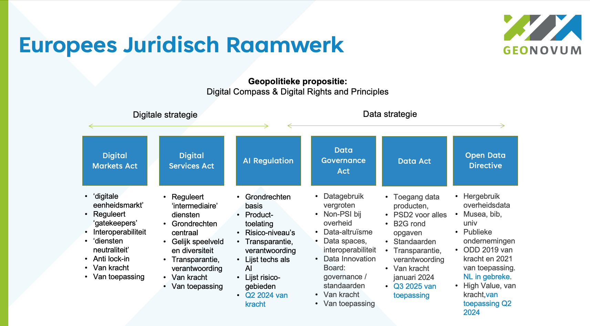

Creative Commons Attribution 4.0 International Public License (CC-BY)
Samenvatting
De Europese Commissie (EC) heeft meerdere wetsvoorstellen m.b.t. digitalisering en data gedaan die de komende jaren geïmplementeerd worden. Gezamenlijk vormen ze de geopolitieke positionering t.a.v. digitalisering en data van de Europese Unie (EU). Centraal in die propositie is het benutten van de maatschappelijke waarde van digitalisering en data, en gelijktijdig het versterken en beschermen van de individuele rechten van burgers.
De Europese Commissie (EC) heeft in de commissieperiode 2020-2024 diverse wetten gerealiseerd die inmiddels bijna allemaal van kracht zijn. De bekend gemaakte feitelijke informatie over de inhoud van de wetten, de activiteiten van de EC, en de bekende tijdslijnen t.a.v. implementatie worden hier gedeeld. De bedoeling is dat iedere betrokkene in Nederland zich hier makkelijk kan informeren, en tegelijkertijd materiaal vindt dat in de eigen organisatie kan worden hergebruikt.
Status van dit document
Deze paragraaf beschrijft de status van dit document ten tijde van publicatie. Het is mogelijk dat er actuelere versies van dit document bestaan. Een lijst van Geonovum publicaties en de laatste gepubliceerde versie van dit document zijn te vinden op https://www.geonovum.nl/geo-standaarden/alle-standaarden.
Dit is een werkversie die op elk moment kan worden gewijzigd, verwijderd of vervangen door andere documenten. Het is geen door de werkgroep goedgekeurde consultatieversie.
Versiebeheer
De informatie in dit document is niet gegarandeerd correct of actueel.
Dit document is aan verandering onderhevig.
1. Inleiding
Dit is een handreiking met informatie over de Europese Verordeningen en Richtlijnen die behoren bij de Digitale Strategie en de Data Strategie. De Europese Commissie (EC) heeft in de commissieperiode 2020-2024 meerdere wetten gerealiseerd die inmiddels bijna allemaal van kracht zijn.
Om met datahouders binnen de Nederlandse overheid actief naar de kansen en obstakels van de Europese voorstellen te kijken is het Tactisch Beraad EU Informatie (TB), adviserend aan het GI-Beraad, eind 2020 opgericht. In het Tactisch Beraad zorgen de deelnemers voor de terugkoppeling over de Europese ontwikkelingen waar zij bij betrokken zijn.
De afgelopen jaren was er zo gelegenheid om met datahouders en datagebruikers in Nederland pro-actief te kijken naar de kansen en mogelijke obstakels die in die voorstellen schuilen:
om met goede gebruikscasussen invloed uit te oefenen op hoe de nieuwe regels vorm krijgen en nu worden geïmplementeerd, en
om te zorgen dat helder is wat er aan nieuwe verplichtingen bij komt, en te bepalen hoe de nieuwe regels m.b.t. het gebruik van data en digitalisering helpen de eigen beleids- en organisatiedoelstellingen te behalen.
De handreiking die u nu leest is gemaakt door Geonovum voor het Tactisch Beraad EU Informatie (zie ook hieronder bij Proces).
1.1 Doelgroep
Deze informatie is bedoeld voor overheden die data houden, voor niet-overheden die (overheids)data gebruiken of zouden willen gebruiken, en voor alle betrokkenen rond maatschappelijke opgaven die met data werken.
1.2 Leeswijzer
Deze pagina's brengen de actueel bekende feitelijke informatie over de data-gerelateerde Europese regelgeving bijeen, met verwijzingen naar de bron. De informatie wordt verstrekt zonder garantie compleet, juist, actueel of definitief te zijn. Alle informatie op deze pagina's heeft per definitie een voorlopige status.
1.3 Het proces
Het Tactisch Beraad EU Informatie en Geonovum houden de stand van de ontwikkelingen rond Europese regelgeving m.b.t. data bij voor eigen gebruik en voor ons netwerk. Om ons netwerk van dienst te zijn delen we die informatie ook hier, zodat deze informatie kan worden hergebruikt. Wanneer onze eigen informatie wijzigt, passen we ook de informatie op deze pagina's zo spoedig mogelijk aan. Wilt u wijzigingen of suggesties doorgeven neem dan contact via inspire@geonovum.nl.
2. EU neemt geopolitieke positie in
De EU neemt m.b.t. de rol van digitalisering en data een geopolitieke positie in.
Die positie richt zich tegelijkertijd op het maximeren van maatschappelijk nut van digitalisering en datagebruik én het beschermen en versterken van de individuele rechten van mensen.
Dit in contrast tot uitgangsposities elders in de wereld die bijvoorbeeld eenzijdig gericht zijn op waarde-extractie of op het centraliseren van controle. Daarmee is het ook een propositie van de EU aan de wereld, een uitnodiging op gelijksoortige manier als de EU naar digitalisering en data te kijken.
Die geopolitieke propositie is in de Commissieperiode 2019-2024 in uitgangspunten, en twee strategieën met daaronder een aantal wetten vaste vorm gegeven. Onderstaande afbeelding geeft hiervan een overzicht. In de rest van deze handreiking wordt elk van de elementen nader beschreven. De AVG wordt eveneens als onderdeel van dit geheel gezien, al wordt de AVG verder niet in deze handreiking beschreven.
In de Commissieperiode 2024-2029 wordt die geopolitieke propositie verder uitgewerkt en versterkt, met name ook waar het data betreft.

2.1 Digital Compass en Digital Rights and Principles
De uitgangspunten voor de geopolitieke propositie zijn vastgelegd in het EU Digital Compass en de EU Digital Rights and Principles (bron).
De Europese visie op digitale transformatie zet de mens centraal, wil individuen handelingsvermogen geven, en innovatieve bedrijven aanmoedigen.
De Europese vorm van digitale transformatie wil digitale soevereiniteit, inclusiviteit, gelijkheid, duurzaamheid, veerkracht, veiligheid, vertrouwen, levenskwaliteit, respect voor burgerrechten en menselijke aspiraties omvatten, en wil bijdragen aan een dynamische eerlijke maatschappij en economie.
Het EU Digitaal Compass geeft vier assen aan waarvoor doelstellingen per 2030 zijn geformuleerd.
Die vier assen zijn:
Een digitaal vaardige bevolking, en zeer vaardige digitale professionals
Veilige, goed presterende en duurzame digitale infrastructuren
In de EU Digital Rights and Principles wordt beschreven hoe die grondrechten en de Europese waarden toegepast moeten worden in de digitale wereld. Het dient als referentie voor bedrijven en andere actoren in het ontwikkelen en implementeren van technologie. Het is ook een gids voor beleidsmakers. De implementatie van deze rechten en principes is een verantwoordelijkheid van zowel de EU als van Lidstaten. In het jaarlijkse rapport 'State of the Digital Decade' wordt de monitoring van de digitale principes en rechten opgenomen.
De EU Digital Rights and Principles waren in de zomer van 2021 onderwerp van een publieke consultatie. De EC heeft op 26 januari 2022 de inhoud van de digitale rechten en principes voorgesteld, met de uitnodiging aan de Raad en het EP deze mede te ondertekenen.
2.1.1 Rechten
Recht op onderwijs, training en levenslang leren
Recht op eerlijke, gezonde en veilige werkomstandigheden, en passende bescherming in de digitale werkomgeving zoals ook op de fysieke werkplek, ongeacht werknemerstatus, werkvorm of arbeidsduur. Dit betekent ondermeer de mogelijkheid om offline te gaan, en het bewaken van werk-prive balans in de digitale omgeving.
Recht op vrijheid van meningsuiting online, zonder angst voor censuur of intimidatie
Recht op de bescherming van persoonsgegevens online, inclusief het recht op hoe iemand's data wordt gebruikt en met wie die wordt gedeeld (zie de AVG)
Recht op de vertrouwelijkheid van communicatie (digitaal briefgeheim) en van gegevens op digitale apparaten, en recht niet te worden onderworpen aan wederrechtelijke surveillance of afvangactiviteiten.
2.1.2 Beginselen
Universele toegang tot technologie die verbindt en mensen niet van elkaar verwijdert. Dit betekent:
Zorgen dat technische oplossingen burgerrechten respecteert, de uitoefening van die rechten mogelijk maakt, en inclusiviteit uitdraagt
Zorgen dat ouderen, mensen met een beperking, gemarginaliseerden, kwetsbaren en ontrechten niet worden achter gelaten
Zorgen voor randvoorwaarden waardoor alle marktpartijen hun sociale verantwoordelijkheden nemen en naar vermogen bijdragen aan publieke goederen, diensten en infrastructuur
Universele toegang tot betaalbare digitale verbindingen van hoge snelheid, en internetneutraliteit
Universele digitale vorming en vaardigheden zodat mensen een actieve rol in de maatschappij kunnen nemen
Universele online toegang tot alle belangrijke publieke diensten. Niemand zou meer data moeten worden gevraagd dan noodzakelijk voor toegang en gebruik van digitale publieke diensten. Dit betekent een toegankelijke, veilige en betouwbare digitale identiteit, brede toegang tot en hergebruik van overheidsinformatie, en naadloze veilige interoperabele toegang tot digitale zorgdiensten in de hele EU
Toegang tot de voordelen van het gebruik van AI, op basis van eigen geïnformeerde keuzes, en bescherming tegen risico's m.b.t. gezondheid, veiligheid en fundamentele rechten. (UItgewerkt in de AI Verordening) Dit betekent:
Transparantie in het gebruik van AI en algoritmen, en het actief informeren van mensen die hiermee te maken krijgen.
Zorgen dat algoritmes gebaseerd zijn op geschikte datasets, om onwettelijke discriminatie tegen te gaan, en menselijke supervisie mogelijk te maken op uitkomsten die mensen raken.
Zorgen dat algoritmes en AI niet worden gebruikt om mensen keuzes op te leggen m.b.t. bijvoorbeeld gezondheid, onderwijs, werk, en in hun priveleven.
Zorgen voor vereisten waardoor AI en digitale systemen veilig zijn en mensen- en burgerrechten volledig respecteren.
Vrije keuze in online diensten, gebaseerd op objectieve, transparante informatie. Dit betekent ondermeer eenvoudig persoonlijk gegevens mee kunnen nemen naar een andere online dienst (data-portabiliteit)
Toegang tot betrouwbare, diverse en meertalige online omgevingen. Diversiteit in content draagt bij aan een pluralistisch publiek discours, en maakt brede deelname aan democratie mogelijk. Dit betekent ondermeer desinformatie en illegale content tegengaan, zonder het recht op meningsuiting aan te tasten en zonder algemene monitoring verplichtingen
Mogelijkheid voor iedereen om te kunnen achterhalen wie de media die ze benutten bezit of bestuurt.
Universele toegang tot digitale diensten die veilig en privacybeschermend zijn by design. Dit betekent ondermeer het beschermen van digitale identiteiten tegen identiteitsfraude.
Universele digitale wilsbeschikking t.a.v. wat met publieke digitale informatie na iemands dood moet gebeuren.
Toegang tot heldere informatie over de milieu-impact en het energieverbruik van digitale producten en diensten, om verantwoorde keuzes mogelijk te maken.
Kinderen en jongeren verdienen zowel bescherming als de mogelijkheid tot vrije keuze en expressie online
2.2 Twee strategieën als bouwstenen
Twee strategieën zetten deze propositie om in praktijk en regelgeving:
De Europese Digitale Strategie mikt op het vooruithelpen en reguleren van de digitale transformatie in de EU.
Er zijn drie juridische instrumenten door de EC opgesteld als onderdeel van de Digitale Strategie:
De Digital Markets Act (DMA, Digitale Marktenverordening), gericht op zogenaamde 'gatekeepers' / poortwachters met een dominante positie;
De Digital Services Act (DSA, Digitale Dienstenverordening), gericht op alle intermediaire digitale dienstverleners (inclusief de 'gatekeepers');
De AI Regulation (AI verordening), gericht op de toelating van AI producten tot de Europese markt.
3.1 Digital Markets Act (DMA)
De Digital Markets Act (DMA, Digitale Marktenverordening) is ingegaan op 1 november 2022 en sinds mei 2023 van toepassing. Aangewezen zogenaamde 'gatekeepers' moesten per maart 2024 voldoen aan de bijbehorende vereisten. De DMA is een Verordening en daarmee direct van kracht in alle lidstaten. De DMA is een markt regulerende wet, en de vereisten zijn gericht op concurrentieversterking en gelijke voorwaarden voor marktpartijen.
De DMA is
Gericht op open en eerlijk digitale markten
Richt zich op 'gatekeepers' / poortwachters, d.w.z. grote online platforms, netwerk providers, hostingbedrijven. De wet geeft regels t.a.v. de beslismacht die poortwachters hebben over het toelaten van andere dienstenaanbieders.
Een poortwachter is gedefinieerd als
Een platform met een sterke economische positie, met een significante impact op de EU markt, en actief in meerdere EU lidstaten.
Een platform met een sterke intermediaire positie, d.w.z. verbindt een grote groep gebruikers met een groot aantal bedrijven.
Heeft, of heeft bijna, een bestendige en in de tijd stabiele marktpositie
Gericht op het vergroten van de diversiteit van aanbod op de platformen van poortwachters, niet op het hinderen van de innovatiekracht van die gatekeepers zelf
Stelt verplichtingen voor poortwachters, waaraan ze in hun dagelijkse operatie aan moeten voldoen, t.a.v.:
3rd party interoperabiliteit met de diensten van poortwachters in verschillende situaties
toegang voor bedrijven tot de data die ze genereren met het gebruik van het platform van de poortwachter
bedrijven die adverteren en adverteerders moeten de instrumenten en gereedschappen krijgen om zelf onafhankelijk na te gaan welke advertenties hoe worden getoond door de poortwachter
bedrijven moeten in staat zijn hun aanbod en contracten ook buiten het platform van poortwachter aan consumenten aan te bieden
poortwachters mogen niet hun eigen diensten bevoordelen op het platform t.o.v. andere aanbieders
poortwachters mogen consumenten niet hinderen om buiten het platform om met een aanbieder in verbinding of contact te treden.
poortwachters mogen consumenten niet hinderen voorgeïnstalleerde applicaties (op telefoons en tablets bijv.) te deïnstalleren.
Bevat sancties die lijken op die van de AVG:
Boetes mogelijk tot 10% van de wereldwijde omzet van een poortwachter
Dwangsommen mogelijke tot 5% van de gemiddelde wereldwijde dagomzet van een poortwachter.
3.2 Digital Services Act (DSA)
De Digital Services Act (DSA, Digitale Dienstenverordening) hangt nauw samen met de Digital Markets Act (DMA), en is net als de DMA eind 2020 voorgesteld. Het is een uitbreiding en actualisering van de EU E-commerce Directive 2000/31/EU. Die bestaande Richtlijn wordt hiermee vervangen door een Verordening en trekt zo de regels en interpretatie voor alle Lidstaten gelijk. Sinds november 2022 is de DSA van kracht, en sinds februari 2024 is de wet geheel van toepassing. De Verordening is:
Gericht op een veilige digitale ruimte waarin de (grond)rechten van alle gebruikers van digitale diensten beschermd zijn.
Eist transparantie en verantwoording van digitale dienstverleners.
Gericht op een gelijk speelveld waarin innovatie, concurrentie en groei mogelijk zijn. Dit niet alleen binnen de EU, maar wereldwijd.
Bevat sancties die lijken op die van de AVG.
Het begrip digitale diensten omvat veel verschillende zaken. Denk aan online markten, social media, content-sharing platforms, app stores, online boekingen.
Doorgeefdiensten, die door gebruikers verstrekte informatie in een communicatienetwerk doorgeven, of toegang verstrekken tot een communicatienetwerk
Cachingdiensten, die bij het doorgeven van informatie in een communicatienetwerk deze deels en geautomatiseerd tussentijds tijdelijk opslaan, met als doel latere doorgifte.
Hostingdiensten, die opslag bieden voor informatie van door de gebruiker verstrekte informatie
Online platforms, gezien als een bijzondere vorm van hostingdiensten, die informatie verspreiden aan het publiek
Zulke intermediaire diensten krijgen verplichtingen opgelegd die moeten leiden tot:
Meer keuze en lagere prijzen voor consumenten
Minder illegale content
Betere bescherming rechten van consumenten / burgers
Juridische zekerheid en geharmoniseerde regels voor dienstverleners
Makkelijker starten en schalen van diensten in de EU
EU brede markttoegang voor dienstverleners via online platforms
Meer democratische controle en toezicht over 'systeem' platforms door de maatschappij (zie ook de DMA)
Verzachting van maatschappelijke risico's van manipulatie en desinformatie
De verordening leest als een risicogerichte aanpak, en beschouwt de rol van platforms waar deze systemische risico's vormen voor markt en maatschappij. Het adresseert daarbij de invloed en macht van een platform, de rol van een platform als (maatschappelijke) infrastructuur, en de afhankelijkheden in het ecosysteem van aanbieders.
3.3 AI Regulation
De AI Regulation (AI Verordening) is in juni 2024 aanvaard en op 12 juli 2024 gepubliceerd. De is van kracht sinds 2 augustus 2024.
Net als de DMA en de DSA is de AI Regulation een Verordening en in de hele EU van toepassing. Verschillende onderdelen hebben uiteenlopende verschoningstijden, maar in principe is de wet na 24 maanden van toepassing. Echter het deel over verboden toepassingen en de algemene bepalingen gaan in na 6 maanden (2 februari 2025), de delen over algemeen toepasbare modellen en boetes, governance en bevoegde organen gaan na 12 maanden in, en het stuk over hoog-risico toepassing gaat na 36 maanden (2 augustus 2027) in.
De AI Regulation is wereldwijd het eerste wetsvoorstel in zijn soort. Net als de AVG, de DMA en DSA, is het vormgegeven als een instrument dat striktere eisen en grotere sancties koppelt aan hogere risiconiveau's.
De AI Regulation definieert toelatingseisen waaraan AI moet voldoen om in de Europese markt te mogen worden aangeboden of gebruikt.
De werking strekt zich uit over:
Providers van AI (gebruikende) systemen die in de EU op de markt worden gebracht
Gebruikers van AI (gebruikende) systemen
Providers en gebruikers van AI (gebruikende) systemen waarvan de uitkomsten worden gebruikt in de EU.
Hiermee richt het zich niet alleen op partijen die in de EU gevestigd zijn.
Wat onder AI wordt verstaan was in het eerste voorstel wat op een telkens aan te passen lijst van technieken en methoden staat. Bij publicatie van het voorstel stonden de volgende technieken daar op:
Machineleren aanpakken ((un)supervised learning, reinforcement learning, deep learning)
Logica en kennisgebaseerde aanpakken (knowledge representation, inductive (logic) programming, knowledge bases, inference and deductive engines, (symbolic) reasoning and expert systems)
Statistische aanpakken (Bayesian estimation, search and optimization methods)
Het lijkt er op dat er wel een definitie van wat onder AI wordt verstaan direct als artikel in de AI Regulation zal worden opgenomen. Dit omdat de definitie, naar mening van de Raad en EP, centraal staat voor de primaire wetgeving en daarom niet in de secundaire wetgeving (de Annex) pas moet worden gegeven. Dit maakt van de definitie een veel meer politieke discussie, en veel minder een technisch begrip. In de versie van het parlement is bovendien een nieuwe groep toepassingen binnen scope geplaatst, namelijk de zogenaamde foundational models (dit zijn de grootschalige modellen achter generatieve AI bijvoorbeeld).
De afweging van risico's van AI toepassingen worden gemaakt t.o.v. de mate waarin het individuele rechten of de veiligheid aantast. Toepassingen worden ingedeeld in verboden toepassingen, hoog-risico toepassingen en overige toepassingen.
Verboden toepassingen zijn onbewuste beïnvloeding van het gedrag van mensen dat hen of anderen psychische of lichamelijke schade kan bezorgen, het misbruiken van kwetsbaarheden van een groep of persoon op basis van leeftijd of beperking, toepassingen door overheden voor een zgn. sociale score, en algemene inzet van biometrische identificatie in de publieke ruimte voor opsporing.
Hoog risico-toepassingen worden genoemd op een aparte lijst. Die lijst is gesplitst naar toepassing in bepaalde apparatuur en naar gebruiksvormen. Apparatuur die nu in het voorstel in eerste genoemd instantie wordt:
machinerie
speelgoed m.b.t. veiligheid daarvan
vaartuigen, recreatievaartuigen
liften
omgang met explosieve middelen
radio apparatuur
apparatuur onder druk (gas, hydraulisch)
medische apparatuur
civiele luchtvaartuigen
voertuigen
agrarische en bosbouwmachines
zeewaardige vaartuigen en machines/installaties
spoor-interoperabiliteit
vrachtwagens en trailers
Gebruiksvormen die als hoog risico gelden zijn:
biometrische identificatie en categorisering van natuurlijke personen
management en gebruik van kritische infrastructuur (water, gas, warmte, electriciteit, verkeer)
toelating en assessment in educatie en beroepsopleidigen
werving, selectie, promotie en ontslag van werknemers
toegang tot sociale voorzieningen, en private diensten (toelating, uitkeringen, terugvorderingen, kredietwaardigheid, prioritering hulpdiensten)
opsporing
migratie en grenscontrole
openbaar bestuur en democratie
Aan hoog-risico toepassingen worden diverse eisen gesteld om te kunnen worden toegelaten op de markt:
een risicomanagementsysteem,als iteratief proces gedurende de hele levensduur van een AI systeem (dus niet alleen in de ontwerpfase), o.a. om risico's te identificeren en te voorkomen, en redelijkerwijs te verwachten misbruik te voorkomen.
toetsbaarheid (testen van correcte werking) binnen de bedoeling van de AI toepassing
zwaardere assessment eisen als de toepassing in contact komt met kinderen
opname van het risicomanagementsysteem in bestaande risicomanagementsystemen bij toepassingen voor kredietinstellingen
data en datagovernance eisen (bijv. statistisch relevante data nodig voor trainingssets), het gebruik van persoonsgegevens voor het voorkomen en corrigeren van vooroordelen in data (bias)
technische documentatie bij een product moet compliance met de AI regels aantonen
kunnen aantonen dat gedurende de gebruiksduur de AI toepassing correct werkt
eisen t.a.v. accuraatheid, robuustheid en veiligheid.
AI toepassingen die met eind-gebruikers interacteren moeten dat aan die gebruikers melden.
gebruik van emotie-herkenning en biometrische classificatie moet aan de betrokken personen worden gemeld
manipulatie van beelden en geluid moet worden gemeld in dat beeld of geluid
Providers, distributeurs en gebruikers van toepassingen moeten t.a.v. die eisen een actieve 'boekhouding' voeren als kwaliteitssysteem, en hebben een informatieplicht naar de overheid.
Elk land krijgt een AI toezichtsorgaan, analoog aan de Autoriteit Persoonsgegevens in AVG, en er gelden meldingsplichten. Er komt een Europese AI board die ook Europese instellingen kan beboeten. Vooruitlopend op de AI Regulation is per 1 januari 2023 in Nederland de Autoriteit Persoonsgegevens aangewezen als AI toezichtsorgaan, gelijktijdig met de lancering van een landelijk Algoritmeregister.
Toegelaten hoogrisico-toepassingen krijgen voor maximaal 5 jaren een CE keurmerk, dat kan worden verlengd.
Van alle toegelaten hoogrisico toepassingen komt er een openbare Europese database.
Voor toepassingen met een lager risico wordt een code of conduct aangemoedigd.
Sancties volgen het patroon zoals dat in de AVG is gebruikt:
verboden toepassingen, en het niet voldoen aan data governance vereisten: 6% wereldwijde omzet of 30 miljoen Euro
andere schendingen van de regels: 4% wereldwijde omzet of 20 miljoen Euro
niet voldoen aan documentatievereisten: 2% wereldwijde omzet of 10 miljoen Euro
4. Europese Data Strategie
De Europese Data Strategie, begin 2020 voorgesteld, streeft naar een eenheidsmarkt voor de beschikbaarheid en het gebruik van data. De strategie is daarbij gericht op het wereldwijd concurrentievermogen van Europa en op datasoevereiniteit. Technisch wordt naar een pan-Europese dataspace (dataruimte) gestreefd om te zorgen dat er meer data beschikbaar komt voor socio-economisch gebruik, terwijl bedrijven en individuen die data genereren er wel zeggenschap over blijven houden. Die pan-Europese dataspace wordt opgebouwd met meerdere sectorale data spaces waarbinnen afspraken worden gemaakt over de omgang met data.
Samen vormt dit de Europese binnenmarkt voor data (EU Single Market for Data). In de Commissieperiode 2024-2029 wordt dit verder versterkt en verdiept tot een Europese Data Unie.
Binnen de Europese Data Strategie spelen drie juridische bouwstenen een rol:
de Data Governance Act (DGA, Data governance verordening)
de Data Act (DA, Data verordening)
de Open Data Directive (ODD, Open Data Richtlijn) met daarin opgenomen de High Value Data lijst
Verder wordt er geld beschikbaar gesteld om de benodigde infrastructuur, o.a. gefedereerde cloud-diensten te realiseren, en maatregelen getroffen om die cloud-diensten veilig, toegankelijk en competitief te houden.
De Europese Data Strategie bevat veel elementen die rechtstreeks voor datahouders in publiek relevante domeinen van belang zijn. Hieronder worden daarom de onderdelen van de Europese Data Strategie in losse hoofdstukken beschreven.
5. Data Governance Act (DGA)
De Data Governance Act (DGA, Data governance verordening) wil de hoeveelheid data die beschikbaar is voor (her)gebruik vergroten, ondermeer door het vertrouwen in data-intermediairs te verstevigen, en de mechanismen om data te delen te versterken. Hierbij gaat het o.a. om overheidsgegevens waar op enige manier rechten van anderen op rusten (en daarom buiten de scope van de Open Data Directive vallen), om de uitwisseling van gegevens tussen bedrijven via intermediairs, en het gebruik van persoonsgegevens waarbij het uitoefenen van AVG-rechten door individuen makkelijk moet zijn. Ook wordt een nieuwe gebruikstoestemming geïntroduceerd, namelijk het toestaan van gebruik van (persoons)gegevens om altruïstische redenen.
De Data Governance Act is 3 juni 2022 gepubliceerd (zie de gepubliceerde eindversie), en op 23 juni 2022 van kracht geworden. Er gold een verschoningsperiode van 15 maanden (tot 24 september 2023), en de DGA is sindsdien van toepassing. De in de wet genoemde data-intermediairs hebben tot 24 september 2025 om hun nieuwe verplichtingen na te komen.
De DGA is een verordening en heeft als zodanig directe werking. Voor de DGA zijn in Nederland enkele bevoegde organen aangewezen. Voor wat betreft Hoofdstuk II van de DGA, over hergebruik van niet onder de Open Data Richtlijn vallende overheidsgegevens, is het CBS bevoegd orgaan voor het hergebruik van onder het statistisch geheim vallende gegevens, en het Ministerie van Binnenlandse Zaken voor de overige onderwerpen in dit hoofdstuk.
5.1 Hergebruik overheidsdata buiten de Open Data Directive
Hergebruik van overheidsdata die niet onder de Open Data Directive valt, wordt in deze Verordening geregeld in Hoofdstuk II. Dit betreft overheidsgegevens waarop commerciële of statistische vertrouwelijkheid rust, persoonsgegevens die niet binnen de Open Data Richtlijn vallen, en gegevens waarvoor intellectueel eigendom van derden van toepassing is. Voorwaarden die veilig gebruik en eerlijke toegang regelen zijn van toepassing. Het is mogelijk om kosten in rekening te brengen voor hergebruik, maar daaraan zijn voorwaarden t.a.v. transparantie en uitlegbaarheid verbonden. Lidstaten dienen een of meer bevoegde organisaties aan te wijzen die de overheidsdatahouders ondersteunt t.a.v. techniek, verantwoord datagebruik, en het verwerken van aanvragen voor gebruik. Er dient een centraal informatiepunt te zijn waar iedereen de voorwaarden en kosten van gebruik kan vinden voor datasets, en waar iedereen aanvragen kan indienen. Het is de intentie het CBS in Nederland aan te wijzen als bevoegde autoriteit m.b.t. Hoofstuk II van de DGA. Dit ondermeer omdat zij reeds vertrouwd zijn met enkele elementen uit de DGA, zoals een beveiligde omgeving voor hergebruik van gegevens die onder het statistisch geheim vallen. De EC meldt dat al (PDF) op haar website, maar het is nog niet daadwerkelijk tussen CBS en MinBZK geregeld.
5.2 Voorwaarden gesteld aan datadeeldiensten
Verschillende typen datadeeldiensten moeten een notificatieprocedure volgen. Dit betekent aanmelding bij een bevoegde organisatie, die dat moet doorgeven zowel aan de relevante Lidstaten als aan de EC. Een datadeeldienst mag data en bijbehorende metadata alleen gebruiken voor de datadeeldienst, niet voor andere doeleinden, en moet daarom in een aparte rechtspersoon zijn ondergebracht. Datadeeldiensten moeten gelijkelijk toegang bieden aan iedereen. Een aan te wijzen bevoegde organisatie houdt bij of datadeeldiensten aan hun vereisten voldoen, en kan maatregelen nemen als dat niet het geval is. De ACM is de bevoegde autoriteit in Nederland hiervoor.
5.3 Data altruïsme
Data altruïsme is het geven van toestemming voor het gebruik van persoonsgegevens door individuen of van niet-persoonsgebonden gegevens door andere organisaties, voor het gebruik in het algemeen belang, zoals wetenschappelijk onderzoek of het verbeteren van publieke diensten. Een aan te wijzen bevoegde organisatie houdt een openbaar nationaal register bij van erkende gebruikers van via data altruïsme verkregen gegevens. De landelijke registers komen samen in een openbaar EU register van erkende data-altruïstische organisaties.
De ACM is volgens de EC in Nederland aangewezen (PDF) het nationaal register voor data-altruïstische instellingen te voeren, en aanmeldingen voor het Europese register te doen. De ACM neemt aanmeldingen in ontvangst, op hun eigen website.
Alleen non-profit instellingen worden mogelijk erkend. Erkende instellingen moeten jaarlijks een activiteitenrapportage indienen en hebben een aantal op transparantie gerichte verplichtingen. Ook moeten ze in de toekomst voldoen aan een nog door de EC op stellen 'rulebook' waarin nadere eisen t.a.v. informatievoorziening, technische en veiligheidsvereisten, communicatievereisten en aanbevelingen m.b.t. interoperabiliteitsstandaarden zullen worden geformuleerd.
Een data-altruïstische instelling heeft de mogelijkheid om toestemming voor hergebruik te verzamelen bij (persoons)gegevens, terwijl het gebruiksdoel alleen in algemene zin is afgebakend (bijvoorbeeld een benoemd algemeen belang, een. onderzoeksdomein, of een type publieke dienstverlening). Hergebruikers binnen dat algemene toepassingsgebied kunnen dan de data-altruïstische instelling als een enkele databron te benaderen en om toestemming voor gebruik te vragen, in plaats van zelf bijvoorbeeld respondenten te zoeken en daarbij telkens individuele toestemming te vragen. Dit maakt dataverzameling voor op zichzelf staande hergebruiksprojecten eenvoudiger en de doorlooptijd korter, in ruil voor publieke verantwoording voor dat hergebruik door de data-altruïstische instelling.
5.4 Data Innovation Board
Een European Data Innovation Board (EDIB) adviseert over de werkwijzen in het kader van deze wet, standaarden, en interoperabiliteit (zie ook de DA), en let op de internationale samenwerking tussen nationaal aangewezen bevoegde organisaties. De EDIB is samengesteld uit vertegenwoordigers van de Lidstaten, een aantal andere (Europese) overheidsentiteiten en een groep experts. In december 2023 kwam de EDIB voor het eerst online bij elkaar en in februari 2024 in persoon. Zie de website van de Europese Commissie voor de actueel bekende EDIB-leden en vergaderstukken.
De Nederlandse Autoriteit Consument en Markt (ACM) is als (nog niet formeel aangewezen) bevoegd orgaan voor de DGA lid van de EDIB.
6. Data Act (DA)
Het voorstel voor de Data Act (DA, Data verordening) is gepubliceerd op 23-02-2022.
In de zomer van 2021 vond een voorbereidende publieke consultatie plaats voor de Data Act. In juli 2023 werd overeenkomst bereikt tussen de Raad en het Parlement over hun respectievelijke versies. In november is de uiteindelijke versie door zowel de Lidstaten als het Parlement aanvaard, waarna deze op 23 december 2023 is vastgesteld en op 11 januari 2024 is gepubliceerd en van kracht werd op 31 januari 2024. De bepalingen in de wet treden grotendeels op 12 september 2025 in werking, d.w.z. er geldt een verschoningstijd van 20 maanden. De Data Act is bedoeld om meer data, in handen van bedrijven of gegenereerd door producten of diensten, onder eerlijke en uniforme regels beschikbaar te krijgen voor (her)gebruik.
6.1 Onderwerpen en scope
De DA stelt EU-brede geharmoniseerde regels met betrekking tot:
data gegenereerd door het gebruik van een product of service toegankelijk maken voor de gebruiker van een product of service
data beschikbaar stellen door (private) datahouders aan datagebruikers
data van private datahouders beschikbaar stellen aan overheden in geval van buitengewone noodzaak in het algemeen belang
De DA bevat regels met betrekking tot
producenten van producten en verleners van diensten, die in de EU worden vermarkt
de gebruikers van die producten en diensten
datahouders die data beschikbaar stellen aan gebruikers in de EU
datagebruikers aan wie data beschikbaar wordt gesteld
overheden
verleners van dataverwerkingsdiensten aan klanten in de EU
6.2 B2C en B2B datadelen
Producten en gerelateerde diensten moeten zo worden gemaakt en aangeboden dat gegevens die door het gebruik ervan ontstaan direct toegankelijk zijn voor gebruikers van die producten en diensten. (B2C is business-to-consumer datadelen, B2B is business-to-business datadelen.)
Bij aanschaf, huur of lease van zo'n product of gerelateerde dienst moet de overeenkomst in gaan op hoe het precies zit met dataverzameling, toegang, gebruik, houderschap en verstrekking.
Als directe toegang door gebruiker niet rechtstreeks mogelijk is moet de datahouder (producent) zorgen dat de gebruiker de gegevens kan opvragen.
De gebruiker kan ook vragen / toestemming geven dat een andere derde partij de data mag gebruiken. Dit mag alleen niet een gatekeeper zijn zoals bedoeld in de DMA. Dit gebruik door derden is enigszins te vergelijken met de Payment Service Directive richtlijn (PSD2) die het mogelijk maakt voor bankrekeninghouders hun bankgegevens direct te laten gebruiken door app bouwers en boekhoudpakketten bijvoorbeeld. De DA regelt in die zin 'PSD2 voor alles en iedereen'. Voor zo'n derde partij gelden een reeks voorwaarden en verboden t.a.v. hoe de data gebruikt kan worden (bijvoorbeeld niet in directe concurrentie met de producent van de data).
Micro-ondernemingen en kleinbedrijf hoeven niet te voldoen aan het beschikbaar stellen van gegevens uit producten of diensten.
Datadelen zoals hierboven moet plaatsvinden op basis van eerlijke niet-exclusieve en niet discriminerende voorwaarden. Contracten mogen verplichtingen tot data delen niet contractueel inperken of wegnemen. Datahouders zijn weliswaar verplicht adequate technische gegevensbescherming te regelen, maar mogen die technische bescherming niet gebruiken om de rechtmatige toegang tot gegevens moeilijker te maken.
Redelijke vergoedingen voor data delen zijn toegestaan onder voorwaarden. Voor kleine gebruikers mogen de kosten niet meer dan de marginale kosten van levering zijn en de kostenberekeningen ter verklaring van eventuele vergoedingen moeten vooraf transparant zijn gemaakt.
Contractuele afspraken mogen geen onevenwichtige eisen van grote datahouders aan micro-ondernemingen en kleine bedrijven bevatten, en altijd in lijn zijn met gangbare commerciële praktijken in een sector. Bijvoorbeeld mogen aansprakelijkheden van de datahouder, en klachten en bezwaarmogelijkheden niet worden ingeperkt in een contract, en mag een datahouder zich geen exclusieve rechten bijv t.a.v. de beoordeling van de correctheid van datalevering toekennen. Streven is altijd evenwichtige contractafspraken m.b.t. data delen af te dwingen.
6.3 B2G data bij uitzonderlijke behoefte
De overheid kan om data verzoeken bij de bedrijven, m.u.v. micro-ondernemingen en kleinbedrijf. (B2G is business-to-government datadelen.)
Het moet dan wel gaan om een uitzonderlijke behoefte voor het gebruik van de gevraagde data.
Zo'n uitzonderlijke behoefte kan zijn het verkomen van, reageren op, en herstel na een noodsituatie. Of, waar het gebrek aan data een overheid hindert in het uitvoeren van een publieke taak in het algemeen belang die expliciet bij wet is beschreven, en die data niet langs andere weg kan worden verkregen, of die data de administratieve lasten van datahouders substantieel verkleint. Het verandert niet andere bestaande verplichtingen of regelingen t.a.v. het opvragen van gegevens door de overheid bij bedrijven (zoals bijvoorbeeld het CBS).
De opgevraagde data mag alleen voor het tevoren geformuleerde doel worden gebruikt, niet voor opsporingsdoeleinden. Dataverstrekking door bedrijven is in beginsel gratis, en hooguit tegen marginale kosten plus een redelijke marge mits dit tevoren o.b.v. kostenberekeningen transparant is gemaakt. Opgevraagde gegevens mogen voor statistiekdoeleinden en voor non-profit onderzoek worden doorgeleverd door de overheid. De datahouder wordt hierover geïnformeerd.
Overheden mogen data opvragen bij organisaties in eigen land en in andere landen, zij het in samenwerking met de overheden van zo'n ander land.
6.4 Veranderen van dataverwerkingsdienst
Dataverwerkers moeten dataportabiliteit naar vergelijkbare diensten mogelijk maken, en dat moet contractueel met de klant zijn vastgelegd. Zulke dataportabiliteit moet gratis zijn voor de klant, al mogen in de eerste 3 jaren van de inwerkingtreding van de DA hooguit marginale kosten in rekening worden gebracht.
6.5 Ongerechtigde internationale toegang tot niet-persoonsgegevens
Het overbrengen van niet-persoonsgegevens naar buiten de EU, of toegang tot dergelijke gegevens door overheden moet door dataverwerkende diensten technisch, juridisch, organisatorisch en contractueel worden voorkomen, waar dat leidt tot conflicten met EU wetgeving of wetgeving van Lidstaten.
Juridische eisen van een derde land aan dataverwerkers mogen alleen worden opgevolgd indien gebaseerd op een internationale overeenkomst tussen het derde land en de EU, of de betreffende Lidstaat. Is zo'n overeenkomst er niet, zijn er omstandigheden waaronder een dataverwerker alsnog mee mag werken aan een verzoek van een derde land, ter beoordeling van de Europese Data Innovation Board.
6.6 Interopabiliteit
De DA geeft een reeks essentiële vereisten om interoperabiliteit mogelijk te maken tussen data spaces en data verwerkende diensten. Zo moeten data inhoud, structuur, licenties, verzamelmethode, kwaliteit en onzekerheden gedocumenteerd zijn, evenals data structuren, formaten, classificaties, API beschrijvingen etc. De EC kan verdere regels stellen t.a.v. interoperabiliteit, ook voor bepaalde sectoren. De EC kan standaarden vereisen, en (internationale) standaarden adopteren en verplicht stellen, niet alleen t.a.v. data maar ook bijvoorbeeld t.a.v. architectuur, technische standaarden en federatie van clouddiensten t.b.v. de Europese dataspace(s). De regels streven interoperabiliteit en portabiliteit na op zowel transport, syntactisch, semantisch, beleid en gedragsniveau. (Dit sluit aan op de Europese standaardisatiestrategie die niet alleen over digitale zaken gaat.)
6.7 Handhavingsmechanisme
In iedere Lidstaat wordt een bevoegde autoriteit aangewezen en belast met de handhaving van de DA. Deze kan administratieve boetes opleggen, en iedereen kan een klacht of verzoek indienen. De Autoriteit Persoonsgegevens heeft een rol voorzover persoonsgegevens aan de orde zijn, en ook sectorale autoriteiten behouden hun zeggenschap. De boetes kunnen door de Lidstaat zelf worden opgesteld, voor sommige gevallen verplicht in lijn met de sanctieregels in de AVG. (Dit wijkt af van hoe handhaving in de AVG, DMA, DSA, en AI verordeningen is geregeld waar de regels t.a.v. sancties veel centraler zijn vastgesteld.)
6.8 Verduidelijking Databankenrecht
De DA geeft een zeer belangrijke verduidelijking van wanneer een datahouder databankenrechten krijgt toegekend. Databankenrechten ontstaan in principe wanneer een datahouder substantieel investeert in het in een databank onderbrengen van gegevens. De DA verduidelijkt dat databanken waarin data verkregen uit, of gegenereerd door, het gebruik van een product of gerelateerde dienst geen databankenrechten toegekend kunnen krijgen.
7. Open Data Directive
De Open Data Directive formuleert hoe overheden open data beschikbaar moeten stellen (zowel na een aanvraag als bij pro-actieve publicatie). Beschikbaar te stellen data moet waar mogelijk digitaal in open en machine-leesbare formaten samen met hun metadata toegankelijk, vindbaar en herbruikbaar worden gemaakt. In voorkomende gevallen volstaan ook bestaande formaten (as-is).
De Open Data Directive (ODD, Open Data richtlijn) is aangenomen in 2019. De Nederlandse Wet Hergebruik van Overheidsinformatie is de plek waar deze richtlijn moet worden omgezet in de Nederlandse wetgeving. De Lidstaten hadden tot 16 juli 2021 om de Richtlijn in nationale wetgeving op te nemen, maar in Nederland heeft dat langer geduurd. Tot 6 februari 2022 vond een internetconsultatie over de ontwerptekst voor de nieuwe Wet Hergebruik Overheidsinformatie plaats die de ODD in Nederlandse wetgeving omzet. Op 4 juni 2024 is de implementatiewet voor de Open Data Richtlijn in de Eerste Kamer aangenomen, waarin de Wet Hergebruik Overheidsinformatie en enkele andere wetten in lijn worden gebracht met die richtlijn.
De Open Data Directive is de opvolger van de Hergebruiksrichtlijn (uit 2003 en 2013). Alle voorgaande bepalingen blijven van kracht of worden aangescherpt en verduidelijkt. Als voorheen blijft het beschikbaar stellen van open data gebaseerd op het nationale openbaarheidsregime van een Lidstaat, en blijft pro-actieve publicatie van open data in principe een vrijwillige activiteit.
Er zitten enkele nieuwe elementen in de Richtlijn:
Het werkingsbereik is uitgebreid met zgn. 'public undertakings'. Wanneer zij open data publiceren of ingaan op een verstrekkingsverzoek, moet dat volgens het bepaalde in deze Richtlijn. 'Public undertakings' zijn o.a. netwerkbeheerders, havens, spoor, nutsbedrijven etc.
De EC heeft de mogelijkheid, binnen grenzen, zelf aanpassingen te doen
Een van die mogelijkheden van de EC is het bijhouden van een 'EU High Value Data' lijst, die aan alle Lidstaten een verplichting tot publiceren van data oplegt. Hieronder wordt de High value Data lijst nader toegelicht.
7.1 High Value Data lijst
De Open Data Directive geeft de EC de mogelijkheid met een Uitvoeringsverordening open data verplichtingen op te leggen aan alle Lidstaten tegelijkertijd (dus zonder omzetting in nationale wetgeving). Zo'n uitvoeringsverordening vermeldt hoe en onder welke voorwaarden de verplichte open data moet worden gepubliceerd, en verstrekt in een bijlage de EU High Value Data lijst zelf.
Data, die op de EU High Value Data lijst wordt genoemd, moet verplicht door alle Lidstaten, mits voorhanden, als open data worden gepubliceerd en ontsloten via APIs (zoals beschreven in hoofdstuk 5 van de ODD). Het betreft een uitvoeringsverordening, en deze heeft kracht van wet ongeacht de omzetting van de Open Data Directive in de Nederlandse Wet Hergebruik van Overheidsinformatie. De wettelijke verplichtingen van de High Value Data lijst staan volledig op zichzelf.
De eerste editie van High Value Data lijst had er tijdig voor de transpositie-deadline van de ODD zelf moeten zijn, maar heeft politiek vertraging opgelopen. De EC heeft op 24 mei 2022 het voorstel gepubliceerd voor de eerste EU High Value Datalijst. Op 21 december 2022 is de uitvoeringsverordening besloten. De uitvoeringsverordening ging 20 dagen na publicatie op 20 januari in, d.w.z. op 9 februari 2023. De open data eisen moesten uiterlijk 16 maanden later, d.w.z. per 9 juni 2024 door iedere Lidstaat vervuld zijn. De eerste rapportage (samen met de INSPIRE rapportage) over de implementatie vindt plaats in februari 2025.
De eerste lijst omvat verplichtingen voor de data-domeinen (zoals beschreven in artikel 13 (1) van de ODD):
Geo-data
Handelsregisters
Statistiek
Aardobservatie en Milieu
Meteorologie
Mobiliteit
De verplichtingen voegen voor geo-data, aardobservatie/milieu en mobiliteit een open data verplichting toe aan een reeks INSPIRE thema's (25 v.d. 34).
In Nederland zijn de leden van het Tactisch Beraad met het Ministerie van Binnenlandse Zaken met de implementatie bezig (geweest). Geonovum heeft een Handreiking implementatie High Value Datasets en enkele aanvullende factsheets waarin de interpretatie en aspecten van de High Value Datalijst worden toegelicht.
In komende jaren wordt de lijst periodiek aangevuld door de EC, met nieuwe data-domeinen en mogelijke uitbreiding binnen al benoemde domeinen. De volgorde is daarbij telkens dat er eerst een implementatieverordening komt voor het aanwijzen van nieuwe thema's, en daarna een additionele verordening die de datasets binnen die thema's benoemt.
In 2025 komt naar verwachting voor de eerste keer zo'n voorstel voor een nieuwe lijst thema's tot stand, waarvoor over enkele jaren dan nieuwe verplichtingen zullen volgen voor nog te benoemen specifieke datasets . Over die uitbreiding van High Value Data thema's is in 2023 een adviesrapport verschenen.
Die nieuwe thema's betreffen mogelijk
energie, ter ondersteuning van de energie dataspace, met bijvoorbeeld real time data over consumptie en productie, en aandeel hernieuwbare energiebronnen.
gezondheidszorg, ter ondersteuning van de health dataspace, met bijvoorbeeld statistieken en capaciteitsgegevens, toegelaten medicijnen en hulpmiddelen, behandelingseffectiviteit.
overheid en publieke diensten, o.a. omwille van het European Interoperability Framework (EIF), met gegevens over inkoop, verkiezingen, lobbying, lijsten van publieke instanties, nationale wetgeving en informatieregisters.
taal, in aansluiting op de language dataspace, met taalcorpora, officiële publicaties en (media-)archieven
klimaatschade, o.a. met economische schadecijfers, kwetsbaarheden (water, land, kust, weer, infrastructuur), biodiversiteit, landbouwpraktijken en afvalstromen
recht en justitie, met gerechtelijke uitspraken, strafmaten, wetgeving(sprocessen) en rechtbanken.
financiën, in relatie tot de European Financial Transparency Gateway en finance data space, met data over inflatie en indices, belastingen en economische activiteit, overheidsbegrotingen en -uitgaven, financiële verklaringen van belangen en vermogen.
7.1.1 Inhoud uitvoeringsverordening
De uitvoeringsverordening bepaalt in haar bijlage (Annex I) welke overheidsdata verplicht als open data moet worden gepubliceerd. Voor die datasets bepaalt de wet de eisen die worden gesteld aan publicatie en gebruik van die datasets, waaronder de minimumvereisten aan ontsluiting via een API. Het staat landen vrij verder te gaan dan de implementatiewet voorschrijf, en t.a.v. de hoeveelheid data worden landen daartoe ook expliciet aangemoedigd. Unie of nationale wettelijke vereisten die verder gaan blijven onverminderd van kracht.
De genoemde data moet via een API machineleesbaar worden ontsloten, en waar aangegeven ook voor bulk download. Een API is gedefinieerd als "een set functies, procedures, definities en protocollen voor communicatie tussen machines en de naadloze uitwisseling van data." Er wordt dus geen bepaalde technische keuze voorgeschreven. Wel moet het gaan om "functionele API's overeenkomend met de redelijke behoeften van hergebruikers". Dit betekent dat datahouders in het maken van (ontwerp)keuzes rond API's aan moeten sluiten op de werkelijke gebruiksbehoeften van hergebruikers. Dit is een kwaliteitscriterium gebaseerd op hergebruik en hoe zich dat ontwikkelt, in lijn met hoe de hele EU datastrategie zelf georiënteerd is op de maatschappelijke waarde van datagebruik zoals verwoord in de EU propositie in deze Handreiking.
De verplichting geldt met terugwerkende kracht, d.w.z. voor de data die al is verzameld (en niet uitsluitend als nieuwe eis aan toekomstig te verzamelen data)
Data moet worden voorzien van een open licentie (publiek domein dedicatie of hooguit naamsvermeldinsvereiste. CC0, CC-BY of equivalent)
Gebruiksvoorwaarden van API's moeten worden gepubliceerd. Die voorwaarden mogen niet het hergebruik onnodig in de weg staan.
API's moeten geheel gedocumenteeerd zijn, en er moet een contactpersoon worden aangewezen.
Lidstaten mogen middels een ministeriële regeling een tijdelijke uitzondering aanhouden voor high value datasets waar nu nog een wettelijke verplichting om inkomsten te genereren aan hangt, en de beslissing daartoe moet meteen worden gepubliceerd. Zo'n uitzondering duurt maximaal 2 jaren (zoals verwoord in de ODD) vanaf de inwerkingtredig, dus tot 9 februari 2025. In Nederland maken geen dataproviders gebruik van deze mogelijkheid.
Voor persoonsgegevens mogen additionele gebruiksbeperkingen worden opgelegd, maar slechts zover noodzakelijk voor de bescherming van individuen en hun persoonsgegevens (d.w.z. niet om hergebruik af te remmen, of de toegang tot de dataset in zijn geheel te beperken).
Twee jaar na inkrachttreding, daarna telkens elke 2 jaar, rapporteren Lidstaten over wat ze hebben gedaan. Die rapportages moeten ingaan op:
De lijst van specifieke datasets op Lidstaatniveau die horen bij de in deze wet bepaalde high value data.
Een permanente link naar de licentievoorwaarden van de data
Een permanente link naar de API’s van de data
Voorzover aanwezig gepubliceerde handreikingen bij de data
Welke overheden een tijdelijke uitzondering hebben gekregen voor het publiceren van high value data.
7.1.2 Verplichtingen per thema
7.1.2.1 Mobiliteit
Dit is in de context van de ODD een klein thema, omdat heel veel gegevens al vallen onder de ITS Richtlijn (Intelligent Transport Services) en buiten scope van de Open Data Directive zijn geplaatst.
In scope is het INSPIRE thema Vervoersnetwerken (Annex I). Daarnaast zijn voor binnenlandse waterwegen statische data, dynamische data (zoals profielen), en electronische navigatiekaarten (ENC) aangemerkt voor publicatie als open data, voor die landen die vallen onder de Richtlijn 2005/44/EC m.b.t. ‘harmonised river information services on inland waterways’.
7.1.2.2 Geodata
Vier INSPIRE thema’s uit INSPIRE Annex I en één thema uit annex III krijgen een open data verplichting:
Administratieve eenheden
Geografische namen
Adressen
Gebouwen
Kadastrale percelen
Daarnaast vallen referentiepercelen en landbouwpercelen zoals benoemd in de 1306/2013 en 1307/2013 Regulations m.b.t. de Common Agricultural Policy (CAP) onder de open data verplichting.
7.1.2.3 Aardobservatie en milieu
Aardobservatie en milieu is het breedste thema van de zes, en omvat alle fysieke, biologische en chemische elementen van de aarde inclusief de invloed van menselijke activiteiten. De beschrijving van dit thema in het voorstel is inclusief satellietdata, hetgeen verrassend is. Satellietgegevens zijn natuurlijk onderdeel van aardobservatie, maar voor de adviesstudie voor high value data was satellietdata buiten scope geplaatst. Enerzijds omdat Europees verzamelde satellietdata open is, en de Open Data Directive alleen naar data van lidstaten kijkt.
Anderzijds zowel omdat slechts weinig lidstaten hun eigen satellietdata verzamelen en een criterium voor aanmerking is dat het merendeel der lidstaten de data moet hebben, als omdat landen die wel satellietdata verzamelen dat deels met private investeringen doen.
De kwalificatie die ze erna aan toevoegen dat het gaat om data in de scope van INSPIRE thema’s is voor nu afdoende om satellietgegevens buiten scope te plaatsen van de eerste verplichtingen, terwijl de inclusie van satellietgegevens in de wetstekst wel toekomstvastheid garandeert.
Aangemerkt voor dit thema worden 19 INSPIRE thema’s:
Twee thema's uit INSPIRE Annex I: Hydrografie en Beschermde gebieden.
Heel INSPIRE Annex II: Hoogte, Geologie, Bodemgebruik en Orthobeeldvorming.
Dertien van de eenentwinting thema's uit INSPIRE Annex III: Gebiedsbeheer, Biogeografische gebieden, Energiebronnen, Milieubewakingsvoorzieningen, Habitats en biotopen, Landgebruik, Minerale bronnen, Gebieden met natuurrisico’s, Oceanografische geografische kenmerken, Faciliteiten voor productie en industrie, Zeegebieden, Bodem en Spreiding van soorten.
Samen met Geodata en Mobiliteit krijgen dus 25 van de 34 INSPIRE thema's een open data verplichting opgelegd. Hiermee wordt INSPIRE een belangrijke open data bron voor de Europese dataspace(s).
Daarnaast is alle milieu-informatie in scope zoals genoemd in Directive 2003/4/EC over publieke toegang tot milieu-informatie. Te publiceren data is ook die data die (door monitoring- en rapportageverplichtingen) ontstaat in de context van expliciet genoemde artikelen uit 31 milieugerelateerde EU Directives en Regulations, t.a.v. lucht, klimaat, emissies, natuurbehoud en biodiversiteit, geluid, afval, water en twee stukken horizontale wetgeving. Afwezig in die specifieke opsomming van onderwerpen is het thema Bodem, al wordt dat wel door het betreffende INSPIRE thema en Verordening 2003/4/EC over toegang tot milieu-informatie ingevuld.
Het gaat concreet om:
Lucht
Artikelen 6-14 Directive 2008/50/EC on ambient air quality and cleaner air
Artikel 7 Directive 2004/107/EC on arsenic, cadmium, mercury, nickel and polycyclic aromatic hydrocarbons in ambient air
Klimaat
Articles 18(1), 19, 26(2), 39(3) of Regulation (EU) 2018/1999 Governance of the Energy Union and Climate Action
Article 26 of Regulation (EC) 1005/2009 substances that deplete the ozone layer
Emissies
Article 24, 32, 55, 72 of Directive 2010/75/EU, industrial emissions
Article 21 of Directive 2012/18/EU, on the control of major-accident hazards involving dangerous substances
Article 10 of Council Directive 91/676/EEC, the protection of waters against pollution caused by nitrates from agricultural sources
Article 7 of Regulation (EC) No 166/2006, the European Pollutant Release and Transfer Register
Article 18 of Regulation (EU) 2017/852 on mercury
Article 10 of Directive (EU) 2016/2284 on the reduction of national emissions of certain atmospheric pollutants
Natuurbehoud en biodiversiteit
Articles 4, 9, 12 of Directive 2009/147/EC, on the conservation of wild birds ·
Articles 4, 6, 16, 17 of Council Directive 92/43/EEC20, on the conservation of natural habitats and of wild fauna and flora ·
Article 24 of Regulation (EU) 1143/2014 on the prevention and management of the introduction and spread of invasive alien species ·
Data for the nationally designated protected areas inventory – (CDDA), National biogeographical regions
Geluid
Articles 4, 5, 7, 10 of Directive 2002/49/EC on the assessment and management of environmental noise
Afval
Article 15 of Council Directive 1999/31/EC, on the landfill of waste ·
Article 18 of Directive 2006/21/EC waste from extractive industries ·
Article 10 of Council Directive 86/278/EEC, on the protection of the environment, and in particular of the soil, when sewage sludge is used in agriculture ·
Articles 15-17 of Council Directive 91/271/EEC, concerning urban waste-water treatment ·
Article 13 of Regulation (EU) 2019/1021/EU , on persistent organic pollutants ·
Article 15 of Commission Recommendation 2014/70/EU28, on minimum principles for the exploration and production of hydrocarbons (such as shale gas) using high-volume hydraulic fracturing
Water
Articles 15-17 of Directive 91/271/EEC, concerning urban waste-water treatment ·
Article 13 of Directive 2006/7/EC concerning the management of bathing water quality ·
Articles 5, 8, 11, 13, 15 of Directive 2000/60/EC, water policy framework
Articles 3-6 of Directive 2006/118/EC on the protection of groundwater against pollution and deterioration ·
Article 5 of Directive 2008/105/EC on environmental quality standards in the field of water policy ·
Articles 17, 18 of Directive 2020/2184/EU on the quality of water intended for human consumption ·
Articles 3-8, 10 of Directive 2007/60/EC , assessment and management of flood risks ·
Articles 15, 18 of Directive 2004/35/EC on environmental liability with regard to the prevention and remedying of environmental damage ·
Article 8 of Regulation (EU) 2020/852, framework to facilitate sustainable investment
7.1.2.4 Meteorologie
Dit betreft alle waarnemingsdata van weerstations, klimaatdata (gevalideerde observaties, en historische gegevens), weerwaarschuwingen, radardata (bijv. bruikbaar voor wolkenformaties, neerslag en wind), en data uit voorspellingsmodellen (veelal grote volumes data).
7.1.2.5 Statistiek
Het thema statistiek komt in het voorstel veel uitgebreider aan bod dan in de adviesstudie die aan het voorstel ten grondslag ligt het geval was.
De EC heeft, net als voor milieugegevens, als aanknopingspunt gekozen voor de rapportageverplichtingen die lidstaten hebben op grond van een reeks Richtlijnen en Verordeningen t.a.v. de onderwerpen:
Industriële producenten prijsindex, naar activiteit
Verkoopvolumes naar activiteit
EU internationale handel, im- en export, naar handelspartner, product en handelsstroom
Tourisme in Europa
Geharmoniseerde consumentenprijzenindexes
BBP, en sleutelindicatoren m.b.t. bedrijven en huishoudens
Voor elk van deze onderwerpen wordt gedetailleerd weergegeven wat en hoe er gepubliceerd moet worden.
7.1.2.6 Bedrijven en bedrijfseigendom
De adviesstudie uit 2020 deed voorstellen over 4 soorten gegevens: basisgegevens van bedrijven, gedeponeerde documentatie, eigendom, en faillissementen.
Het voorstel omvat alleen de basisgegevens van bedrijven en gedeponeerde documentatie, d.w.z. het Handelsregister in zijn basale vorm, inclusief registratienummers en SBI-codes. De publicatie van deze gegevens als open data moet gebruik maken van internationaal gangbare begrippenlijsten en taxonomieën. In eerste lezing moeten gegevens uit gedeponeerde documenten die ook als data aanwezig zijn ook als data worden gepubliceerd (Italië heeft bijvoorbeeld bepaalde gegevens uit gedeponeerde documenten ook als gestructureerde data).
De Open Data Directive voorziet in een tijdelijke uitzondering van maximaal twee jaren voor bepaalde datasets. Het ligt in de lijn der verwachting dat lidstaten met name voor deze gegevens gebruik zullen maken van de uitstelmogelijkheid.
8. European Data Spaces (Dataruimten)
Er wordt een 'eenheidsmarkt voor data' gecreëerd, die vorm krijgt in de vorm van een EU-brede data space (dataruimte). De EU-brede data space is waar alle aspecten uit de hiervoor genoemde Verordeningen tot praktische uitdrukking komen. Het is niet een vraag of je als data-gebruikende of data-delende deel wilt nemen aan de EU dataspace. De EU-brede dataspace is de omgeving waarin je data-gebruik en -delen plaatsvindt, binnen de randvoorwaarden en afspraken die voor die marktomgeving gelden. Met de EU data space wordt het bestaande vrije verkeer van personen, goederen en kapitaal aangevuld met het vrije verkeer van data.
Binnen zo'n data space moet het mogelijk zijn voor iedereen deel te nemen aan het delen, uitwisselen, en gebruiken van data. Ook als het gaat om data die je niet rechtstreeks kunt krijgen, worden er mogelijkheden voorzien om die data wel te kunnen gebruiken. Denk hier o.a. de overheidsdata die binnen de Data Governance Act (DGA) valt, maar niet onder de Open Data Directive (en dus het openbaarheidsregime van de betreffende lidstaat). Zoals bijvoorbeeld het gebruiken van microdata van het CBS om een model te trainen zonder zelf over die microdata te hoeven beschikken, door het model naar de data te brengen.
Wat een data space precies is en hoe het zal worden, krijgt middels een geleidelijk ontstaansproces vorm, waarbij bestaande en nieuwe elementen worden gefedereerd en verbonden. Op basis van bestaande beschrijvingen is een dataspace opgebouwd uit:
een technische infrastructuur die voor iedereen toegankelijk is en veilige uitwisseling en gebruik mogelijk maakt. Dit is voorzien als een gefedereerde cloud-omgeving (hier is een relatie met bijvoorbeeld Gaia-X [^1]).
gereedschappen voor gebruik en delen
generieke data governance afspraken en standaarden, waarin de Data Innovation Board uit de Data Governance Act (DGA) een rol speelt, en sectorale governance afspraken die gangbaar zijn binnen een toepassingsgebied
heldere gebruikscondities (deels nader uitgewerkt in de komende Data Act)
T.a.v. de generieke aspecten van een dataspace publiceren we de Verkenning dataspaces.
De manier waarop de EC de eenheidsmarkt voor data wil vormen, is middels sectorale data spaces, die vervolgens onderling interoperabel zijn.
Binnen sectoren en thema's zijn er vaak meer al geldende afspraken t.a.v. standaarden en professionele normen t.a.v. omgang met data, die telkens gebaseerd zijn op de context van die sector. Een data space bouwt daar dan op voort, zowel om dubbel werk te voorkomen als om de vorming van dataspaces te versnellen.
Op Europees niveau worden de volgende thema's genoemd als sectorale dataspaces, waarop ook acties zijn ingezet:
Gezondheid
Mobiliteit
Industrie
Financiële diensten
Energie
Landbouw
Green Deal
Overheid
Vaardigheden (onderwijs en arbeidsmarkt)
Wetenschap
Cultureel erfgoed
Toerisme
Media
Taal
Verder worden ook circulaire economie en smart communities als mogelijk thema voor een Europese sectorale data space genoemd.
Ook wordt gesproken over de 'persoonlijke data space', die het mogelijk maakt om als individu of organisatie gegevens voor een specifiek gebruiksgeval (tijdelijk) in te brengen. (Een voorbeeld zou kunnen zijn, dat je je eigen mobiliteitsgegevens meeneemt naar een discussie over een nieuwe busroute of rondweg in je wijk). Vanuit een persoonlijke data space kan ook het in de Data Governance Act (DGA) genoemde 'data-altruïsme' worden vormgegeven. Data-altruïsme is het beschikbaar stellen van gegevens voor algemeen nut aan een beherende erkende organisatie die toeziet op het juiste gebruik van die gegevens.
Meer details over de sectorale dataspaces zijn te vinden in het hoofdstuk Uitwerking van de Dataspaces. Voor generieke informatie over zichtbare algemene data space initiatieven zie ook de Verkenning dataspaces.
Open data, zoals de High Value Data lijst uit de Open Data Directive, en bronnen als INSPIRE voeden de data space.
[^1]: GAIA-X is een project om een efficiënte en concurrerende, veilige en betrouwbare data-infrastructuur voor de Europese Unie te ontwikkelen. Het is een Frans-Duits initiatief met een Europese dimensie, gesteund door 22 bedrijven. Het project werd officieel gelanceerd op 4 juni 2020.
9. Bruggen met EU beleidsthema's en andere Verordeningen en Richtlijnen
9.1 Europese beleidsthema's
De EC streeft naar het maximaliseren van de maatschappelijke meerwaarde van datagebruik. Dit geldt nadrukkelijk ook voor de door de EU zelf gestelde doelen en ambities voor de inhoudelijke beleidsthema's. Dit is zichtbaar in hoe beleidsplannen verwijzingen bevatten naar de Digitaliserings- en Datastrategie, en op de beoogde resultaten daarvan voortbouwen. In Nederland is voor deze verordening de Directie Digitale Overheid van het Ministerie van Binnenlandse Zaken de bevoegde autoriteit, en daarbinnen het in oprichting zijnde bureau voor architectuur de implementatie verantwoordelijke.
9.1.1 Green Deal
De Europese Green Deal wijst nadrukkelijk op de noodzaak van digitale transformatie en de voorgestelde EU verordeningen als instrument daarin. De Green Deal Data space krijgt als een van de eerste dataspaces vorm (met als onderdeel de herziening van de INSPIRE richtlijn) en is bouwsteen voor de digitale tweeling van de aarde (Destination Earth (DestinE) gericht op klimaatadaptatie).
9.2 Andere Verordeningen
9.2.1 Free flow of non-personal data regulation
Deze eind 2018 aangenomen verordening over het vrije verkeer van elektronische niet-persoonsgebonden gegevens faciliteert het vrije verkeer voor gegevensverwerkingsdiensten in de EU. Particulieren en (overheids-)organisaties moeten in staat zijn om met behulp van datacentra of clouddiensten gegevens op een willekeurige plek in de EU te kunnen gebruiken, verzamelen, delen of beheren. Het stellen van locatievereisten (anders dan 'in de EU') aan het verwerken van niet-persoonsgebonden gegevens is in principe niet toegestaan (sinds 4 juni 2019). Wettelijke of bestuursrechtelijke bepalingen, of aanbestedingen mogen niet eisen dat de gegevens op een bepaalde plek worden opgeslagen/verwerkt, of dat bepaalde technologische voorzieningen die alleen binnen een specifieke lidstaat zijn gecertificeerd worden toegepast. Het vrije verkeer van gegevensverwerking is verplicht, tenzij redenen van openbare veiligheid meespelen.
Er is geen expliciete link tussen deze verordening en bijvoorbeeld de data governance act en data act, of de digitale markten of diensten verordeningen. Wel maakt deze verordening deel uit van het realiseren van een Europese eenheidsmarkt van data. Daarmee wordt onderstreept dat het denken in (sectorale) dataspaces niet gaat over het vormen van structuren of infrastructuur op nationaal niveau: Opslag en verwerking van gegevens is per definitie een pan-Europese activiteit.
De Commissie ziet het reguleren van internationale interoperabiliteit van overheidsdiensten als fundamentele voorwaarde voor het verder ontwikkelen en vervolmaken van de digitale eenheidsmarkt. Betere internationale interoperabiliteit in de publieke sector creëert innovatiekansen, maakt betere planning mogelijk bijvoorbeeld in crisissituaties, en versterkt de technologische soevereiniteit van de EU.
De Verordening heeft 3 doelstellingen:
Zorgen voor een consistente, mensgerichte Europese benadering van interoperabiliteit, van beleidsvorming tot beleidsuitvoering.
Een governancestructuur voor interoperabiliteit opzetten die overheidsdiensten op alle niveaus en in alle sectoren, als ook particuliere belanghebbenden, in staat moet stellen samen te werken — met een duidelijke opdracht om overeenstemming te bereiken over gedeelde interoperabiliteitsoplossingen (bv. kaders, open specificaties, open normen, toepassingen of richtsnoeren);
Samen een ecosysteem van interoperabiliteitsoplossingen voor de overheidssector in de EU tot stand brengen, zodat overheidsdiensten (op alle niveaus in de EU) en andere belanghebbenden kunnen bijdragen aan dergelijke oplossingen en deze kunnen hergebruiken, en zij gezamenlijk kunnen innoveren en publieke waarde kunnen creëren.
Sinds 2010 is er een Europees niet-bindend interoperabiliteitskader. Deze Verordening betekent een krachtiger optreden op dit gebied, en het formuleren van concrete maatregelen. Hiermee wordt een algemeen en voorschrijvend kader neergezet voor interoperabiliteit van netwerk- en informatiesystemen die worden gebruikt om overheidsdiensten in de Europese Unie te verlenen en te beheren.
De Verordening is van toepassing op alle publieke instellingen die informatiesystemen of netwerken leveren of beheren, die gebruikt worden voor het elektronisch verstrekken of beheren van publieke diensten, en geeft maatregelen om de grensoverschrijdende interoperabiliteit van informatie- en netwerksystemen te versterken. Interoperabiliteit betreft hier dus de internationale verbinding en uitwisseling van overheidsdiensten in ketens tussen Lidstaten. Bij het vernieuwen, maken of aanschaffen van informatie- en netwerksystemen dient rekening te worden gehouden met de Europese interoperabiliteitsvereisten zoals die sinds 2010 zijn verwoord in het European Interoperability Framework (EIF), nu onderdeel van het Joinup programma. In Nederland is de compliance met het EIF verankerd in NORA . De mate waarin NORA voldoet aan het EIF wordt jaarlijks gemonitord.
Het voorstel voorziet in de ontwikkeling van een Europees interoperabiliteitskader, dat steunt op vier pilaren:
De vorming van een 'Interoperabel Europa-raad', waarin de Lidstaten met de EC werken aan de ontwikkeling van een gemeenschappelijke strategische agenda voor grensoverschrijdende interoperabiliteit, aan ondersteuning bij het implementeren van interoperabiliteitsoplossingen, en aan monitoring van de voortgang.
Verplichtingen t.a.v. rapportagegegevens om de impact van interoperabiliteitsmaatregelen te kunnen meten.
Een 'Interoperabel Europa-portaal' dat als vindplaats dient voor herbruikbare interoperabiliteitsoplossingen, en kennisdelen en interactie tussen gebruikersgroepen mogelijk maakt.
Aanvullende maatregelen zoals rechtskaders voor het delen en gebruiken van open aanbevolen interoperabiliteitsoplossingen en technologie voor openbaar bestuur (De Commissie schaart dit onder 'GovTech', de op technologie gebaseerde samenwerking tussen de publieke en private sector ter ondersteuning van de digitale transformatie in de publieke sector).
In het voorstel wordt onderscheid gemaakt tussen
a) juridische interoperabiliteit (rechtskaders die interoperabiliteit niet belemmeren),
b) organisatorische interoperabiliteit (doeltreffende coördinatie tussen de openbare lichamen)
c) semantische interoperabiliteit (begrip en bewaren van formaat en betekenis van uitgewisselde gegevens) en
d) technische interoperabiliteit.
De Commissie stelt dat op al deze gebieden een hoog niveau van interoperabiliteit van de overheidssector nodig is.
Interoperabiliteitsoplossingen zijn alle technische specificaties (zoals een standaard, conceptueel raamwerk, handreikingen, toepassingen en waar van toepassing gedocumenteerde broncode) die juridische, organisatorische, semantische of technische vereisten beschrijven aan een informatiesysteem om grensoverschrijdende interoperabiliteit te versterken.
De Verordening noemt dat het een fundamentele bouwsteen is voor een digitale eenheidsmarkt, maar verwijst slechts summier naar de dataspaces die de eenheidsmarkt voor data moeten realiseren. Die summiere verbinding bestaat uitsluitend uit het benoemen (in Art 15.5.s) dat Interoperability Board uit deze wet (die december 2024 voor het eerst bijeen komt) moet gaan samenwerken met de European Data Innovation Board (EDIB, waarin de ACM zitting heeft voor Nederland). Beiden zullen principes en standaarden m.b.t. interoperabiliteit opstellen die overlappen waar het zowel overheden als data spaces raakt.
9.2.3 Real Time Traffic-Information Verordening
De ITS Richtlijn (zie hieronder) is ingevoerd om de compatibiliteit, interoperabiliteit en continuïteit van de uitrol en het operationele gebruik van Intelligente Vervoerssystemen (ITS) te verzekeren. Om ervoor te zorgen dat de implementatie van deze richtlijn geharmoniseerd verloopt, heeft de Commissie een aantal gedelegeerde verordeningen aangenomen. Eén daarvan is de Realtimeverkeersinformatiediensten Verordening (RTTI). Deze is goedgekeurd in 2015 en herzien in 2022. De nieuwe versie heeft een bredere scope, omvat meer datatypes en moedigt meer samenwerking tussen de publieke-private sector aan. De verordening heeft als doel de toegankelijkheid, de uitwisseling, het hergebruik en de actualisering van gegevens voor realtimeverkeersinformatiediensten te waarborgen, zodat zij voor alle gebruikers in de EU beschikbaar en nauwkeurig zijn.
Dit houdt in dat verkeersdata in principe machineleesbaar en realtime beschikbaar moet zijn voor all gebruikers in de EU. De nieuwe versie wordt gefaseerd ingevoerd van 2023 tot 2027, waarbij de benoemde typen kerndata voor 2025 toegankelijk moeten zijn.
9.3 Andere Richtlijnen
Hoewel nog niet alle voorgestelde Verordeningen van kracht zijn, worden al wel andere Europese Richtlijnen aangepast in de zin van die Verordeningen. Dit betekent dat het nuttig is om voor de eigen organisatie van toepassing zijnde Richtlijnen te volgen voorzover deze in de komende tijd worden geëvalueerd of vernieuwd.
9.3.1 INSPIRE Richtlijn en GreenData4All
Formeel is de implementatie van de INSPIRE richtlijn in 2021 afgerond. Inhoudelijk ontwikkelt het INSPIRE aanbod zich wel verder, en werken diverse Lidstaten aan het verbeteren van de mate waarin ze aan de INSPIRE richtlijn voldoen. (Zie ook de Geonovum Handreiking Aan de slag met INSPIRE over de implementatie in Nederland). In 2021 is, vanwege het einde van de implementatieperiode, de werking van INSPIRE geëvalueerd, waarin ook is gekeken naar de samenhang met de milieu-informatierichtlijn (2003/4/EC). De vernieuwing van de INSPIRE richtlijn is door de EC nadrukkelijk gepositioneerd als onderdeel van de implementatie van de Europese Datastrategie en de vorming van de Green Deal Data space. De High Value Data lijst in de Open Data Directive bouwt ook voort op INSPIRE. De herziening van de INSPIRE richtlijn is onderdeel van het GreenData4All initiatief, samen met de richtlijn voor toegang tot milieu-informatie. GreenData4All is er op gericht om volledig gebruik te maken van het horizontale juridisch raamwerk zoals beschreven in deze handreiking, en aan te sluiten op de vorming van de Europese dataspaces, daarbij vooral bijdragend aan de vorming van de Green Deal Dataspace. Dit moet het hergebruik van zowel ruimtelijke als milieugegevens verbreden, terwijl de implementatielasten worden geminimaliseerd, waarbij eenmalige beschikbaarstelling het uitgangspunt is. In dit kader is ook de onder INSPIRE vallende regeling 1089/2010 m.b.t. interoperability of spatial data sets and services, aangepast. Naar verwachting wordt die gewijzigde regeling in Q2 2023 geadopteerd.
In juli 2022 is de evaluatie van de INSPIRE richtlijn gepubliceerd. De centrale vraag daarin was in hoeverre verdere Europese stappen nuttig en noodzakelijk zijn. De conclusie is dat dergelijke Europese stappen nog steeds nodig zijn, omdat:
INSPIRE een zeer belangrijke pijler is van de Green Deal dataspace
De oorspronkelijke obstakels die INSPIRE moest wegnemen nog niet geheel zijn geslecht
De implementatie nog niet af is, met name is betere metadata nodig, en nog meer download services
Het gebruik van INSPIRE data over landsgrenzen heen, en over de hele EU heen nog altijd moeilijk is
Er verandering in technologie en informatie-behoefte optreedt die beantwoord moet worden
Sommige technische specificaties daarbij eerder obstakels zijn dan hulp
Een deel van de regels te prescriptief en star zijn zodat niet aan veranderende technologie en behoeften tegemoet kan worden gekomen.
De tijdslijn voor de herziening van de INSPIRE richtlijn onder de noemer GreenData4All is niet geheel duidelijk, en heeft sinds 2021 de nodige vertraging gekend. De tijdslijn voor het GreenData4All initiatief in het geheel. De tijdslijn voor GreenData4All is ruwweg (stand april 2024):
Q1 2024, call for evidence (afgerond)
Q2 2024, publieke consultatie
Q4 2024 impact assessment en onderzoek gereed
Q1 2025 regeling door EC voorgesteld.
9.3.2 ITS Richtlijn
De ITS Richtlijn m.b.t. intelligente vervoerssystemen wordt herzien. In december 2021 is een voorstel gepubliceerd, en tot maart 2022 was openbare feedback geven mogelijk. Het is niet onwaarschijnlijk dat straks de scope over welke data deze Richtlijn iets zegt, wordt uitgebreid met 'in-vehicle' data vooral daar waar auto's met elkaar communiceren zoals in een vloot. Het is ook te verwachten dat in een herziening elementen worden opgenomen die vooruitlopen op de vorming van de Mobility data space, en die invulling geven aan de Smart mobility component uit de Green Deal en de bijbehorende Green Deal Dataspace. Vanuit de ITS Richtlijn kan de EC gedelegeerde verordeningen opstellen. Eén daarvan is de Real Time Traffic-Information verordening die in 2022 is herzien. Zie hierboven. Een akkoord over een gemeenschappelijke tekst tussen de Raad en het Europees Parlement over de ITS Richtlijn is in juni 2023 bereikt. Nu moeten beiden nog definitief akkoord gaan, waarna de definitieve richtlijn wordt gepubliceerd. Dit zal naar verwachting kort na de zomer van 2023 afgerond zijn.
De Corporate Sustainbility Reporting richtlijn (CSRD) is 14-12-2022 aangenomen en had per 6 juli 2024 in Nederlandse wetgeving moeten zijn omgezet. Het implementatiebesluit voor de richtlijn, opgesteld door het Ministerie van Justitie en Veiligheid ligt sinds 12 juni 2024 bij de Tweede Kamer. Nederland is vanwege de vertraagde omzetting op 26 september 2024 door de Europese Commissie in gebreke gesteld.
De bedoeling van de CSRD is een robuust en betaalbaar rapporteringskader m.b.t. duurzaamheid dat vergezeld gaat van auditpraktijken om de betrouwbaarheid van de gegevens te waarborgen en greenwashing en dubbele boekhouding te voorkomen (overweging 13), waarbij het met name van belang is dat plannen in verband met het klimaat gebaseerd zijn op de meest recente wetenschappelijke gegevens (overweging 30).
De CSRD legt rapportage verplichtingen op aan grote bedrijven (250 mensen, 50 miljoen omzet), en organisaties van openbaar belang (banken, verzekeraars etc., behalve als ze minder dan 10 mensen hebben en 0,9 miljoen omzet). Duurzaamheidsgegevens moeten worden opgenomen in de gebruikelijke jaarverslagen van bedrijven en worden gepubliceerd. Kleinere bedrijven in de ketens van deze organisaties kunnen verwachten dat hun grote handelspartners hen om gegevens zullen verzoeken.
Die gegevens betreffen governance van de organisatie, sociale en mensenrechten, en milieufactoren. Milieufactoren gaan over beperking van klimaatverandering waaronder broeikasgasemissies en energieverbruik, klimaatadaptatie, gebruik water en mariene hulpbronnen, gebruik van materiele hulpbronnen, verontreiniging, biodiversiteit en ecosystemen.
Er wordt een Europese duurzaamheidsrapportagestandaard (ESRS) opgesteld ter ondersteuning van deze richtlijn. In 2023 is het eerste, generieke deel, van de ESRS gepubliceerd. Het tweede, meer sectorale deel, zou in juni 2024 gepubliceerd worden maar is uitgesteld tot medio 2026.
De duurzaamheidsrapporteringsstandaarden specificeren de toekomstgerichte, terugblikkende, kwalitatieve en kwantitatieve informatie waarover organisaties moeten rapporteren (Zie de uitgebreide lijst indicatoren). De mate van detaillering leent zich wel voor publicatie als data, maar bedrijven zullen het in de regel als documenten bij hun jaarverslag voegen.
9.3.4 Corporate Sustainability Due Diligence Richtlijn
Naast en voortbouwend op de CSRD is ook de Corporate Sustianability Due Diligence (CSDDD) richtlijn van kracht geworden op 24 juni 2024, en moet uiterlijk 26-7-2026 in Nederland in regelgeving zijn omgezet. Het Ministerie van BZK is dossierhouder. Naar aanleiding van een initiatief van het Europees Parlement legt deze richtlijn een zorgvuldigheidsplicht en aansprakelijkheid op t.a.v. duurzaamheid aan grote organisaties van meer dan 1000 medewerkers én meer dan 450 miljoen omzet. Hiervan zijn er zo’n 6000 in de EU, en daarnaast zo’n 900 buiten de EU die binnen de EU activiteiten hebben van die omvang. De regels worden in stappen van toepassing in 2027-2029. Alle organisaties in de ketens van deze organisaties zullen ook met deze toetsing te maken krijgen, omdat ze compliance moeten aantonen richting hun grotere handelspartners.
Er komt per 1-1-2029 een centraal Europees toegangspunt voor de rapportages in het kader van deze richtlijn.
Vanaf 2027 zal de EC richtsnoeren opstellen t.a.v. het identificeren, prioriteren, en mitigeren van duurzaamheidsimpact, en hoe je dat doet, alsmede voor transitieplannen, sectorspecifieke aspecten en verwijzingen naar gegevensbronnen en digitale instrumenten die naleving ondersteunen.
Wellicht kan de Green Deal Data Space een rol spelen in de gegevens die bedrijven in hun keten voor zowel de CSRD als de CSDDD aan elkaar beschikbaar moeten stellen. Zodat een bedrijf slechts eenmaal de gegevens bijeen brengt, en via de data space in een vertrouwde context en onder gecontroleerde voorwaarden beschikbaar stelt binnen het ecosysteem van actoren, waaronder beleidsmakers. Zo kan ook bedrijfsvertrouwelijke data worden gedeeld en gebruikt zonder deze algemeen openbaar te maken
9.3.5 AI Aansprakelijkheid Richtlijn
Op 28 september 2022 publiceerde de Europese Commissie het voorstel voor de AI Liability Directive (AI Aansprakelijkheid Richtlijn) dat betrekking heeft op de aansprakelijkheid van een aanbieder, ontwikkelaar of gebruiker van AI (hetgeen een overheid zou kunnen zijn). Deze richtlijn is een aanvulling op de AI Regulation, de verordening die nog in onderhandeling is. De AI Regulation is gericht op het voorkomen van schade, terwijl de AI Liability Directive voorziet in een vangnet voor de vergoeding van schade indien die desondanks optreedt. Het heeft betrekking op alle soorten AI-systemen (ongeacht het risiconiveau zoals gedefinieerd in de AI Act).
Op dit moment moeten mensen die als gevolg van AI-technologie schade ondervinden zelf vaststellen wie aansprakelijk is en moet de fout, de schade en het oorzakelijk verband gedetailleerd worden toegelicht. Omdat AI systemen complex en ondoorzichtig kunnen zijn is het in de praktijk bijzonder moeilijk om aan deze bewijslast te voldoen. Door de nieuwe regels kunnen mensen die schade hebben ondervonden schadeloosstelling krijgen op dezelfde wijze als wanneer zij onder andere omstandigheden schade hadden geleden (zie richtlijn productaansprakelijkheid). De richtlijn voorziet in twee nieuwe significante maatregelen: een vermoeden van een oorzakelijk verband ontslaat geschadigden van de verplichting om gedetailleerd uiteen te zetten op welke wijze de schade door een bepaalde fout of nalatigheid is veroorzaakt, en de toegankelijkheid van bewijsmateriaal afkomstig van bedrijven of leveranciers in geval van AI met een hoog risico wordt geregeld.
Deze richtlijn dient binnen de gebruikelijke 2 jaren na goedkeuring door de Lidstaten in nationale wetgeving te zijn omgezet.
10. Bruggen met Nederlandse wetten en programma's
Het merendeel van de in deze handreiking beschreven Europese wetten bestaat uit Verordeningen, die na publicatie directe wetswerking hebben in Nederland.
Tegelijkertijd zijn er Nederlandse wetten in voorbereiding, en bestaande en geplande programma's die in de context van de Europese regelingen vallen. Hierna worden enkele van dergelijke Nederlandse initiatieven genoemd, en hun verhouding tot de beschreven Europese wetten geduid.
10.1 Interbestuurlijke Datastrategie (IBDS)
De IBDS is een tienjarig programma (2022-2031) van het Ministerie van Binnenlandse Zaken (uitvoering door ICTU), gericht op de informatiehuishoding van de Nederlandse overheid. Het voorziet in een zogeheten Federatief Datastelsel (FDS) dat niet alleen de Basisregistraties, maar ook andere landelijk belangrijke dataverzamelingen voor alle bestuurslagen ontsluit.
Er wordt gesteld dat wie aansluit aan het FDS daarmee ook automatisch compliant is aan Europese bepalingen. Dit impliceert een soort hiërarchie (Europees, nationaal, dataprovider) die er niet is. Het Europese perspectief is eenheidsmarkt voor vrij verkeer van data, d.w.z. er is geen nationale laag in de visie op wat de Europese (sectorale) dataspace(s) is (zijn). Iedere organisatie is zelfstandig gehouden aan de Europese regels te voldoen, en kan zelfstandig de daarin geformuleerde nieuwe instrumenten hanteren.
Het Federatief Datastelsel hanteert wel dezelfde uitgangspunten als de Europese datastrategie, zoals die van een gefedereerde infrastructuur.
10.2 Zicht op Nederland - Datafundament
Zicht op Nederland (ZoN) is een programma van het ministerie van BZK gericht op het omvormen van de (geo-) basisregistraties tot een organisatie-overstijgend geheel. ZoN bouwt voort op een verkenning die in het kader van de Doorontwikkeling in Samenhang van de Geobasisregistraties (DiS Geo) is gedaan. Het ZoN datafundament moet datagedreven beleid, bestuur en uitvoering mogelijk maken met hoogwaardige geo-data. Datagedreven werken rond maatschappelijke opgaven moet daarbij over organisatiegrenzen heen mogelijk zijn. De Nationale Geo-Informatie Infrastructuur (NGII) is een stabiele basis waarmee andere data makkelijk kunnen worden uitgewisseld en gekoppeld, op diverse niveaus, waaronder Europees.
10.3 Algemene Informatiewet
De overheid investeert in het verbeteren van de eigen informatiehuishouding. Om de gewenste sturing hiervoor wettelijk te regelen is de Algemene Informatiewet als voorstel in voorbereiding, die zich op alle bestuurslagen richt. De Algemene Informatiewet doet 5 dingen: het introduceert een vernieuwde begrippenlijst voor de gehele informatiehuishouding (verschillende wetten hanteren nu verschillende begrippen met meerdere interpretaties), het gaat in op rechten van burgers, op bijbehorende verplichtingen van de overheid, kaders voor sturing en verantwoording m.b.t. de informatiehuishouding van de overheid, en een voorziening om knelpunten in informatiegebruik op te lossen. Hoewel de scope van de Algemene Informatiewet veel breder is, bevat het ook elementen die als een Stelselwet voor de Basisregistraties zijn op te vatten. Een dergelijke Stelselwet is er eerder nooit gekomen. De Algemene Informatiewet voegt bestaande informatie-gerelateerde wetten (Archiefwet, WOO, Hergebruikswet etc.) niet samen, en vervangt ze ook niet, wel realiseert het meer samenhang tussen de reeds bestaande wetten. Er is in die zin ook geen tegenstrijdigheid in dit wetsvoorstel te verwachten met de Europese wetgeving.
In mei 2023 zijn conceptversies van het wetsvoorstel en memorie van toelichting gepubliceerd, waarop publiek kan worden gereageerd.
10.4 Wet Digitale Overheid
De Wet Digitale Overheid is sinds 1 juli 2023 (gedeeltelijk) van kracht en regelt dat veilig en betrouwbaar inloggen bij de (semi-)overheid voor mensen en bedrijven mogelijk is. Het is een kaderwet die de algemene uitgangspunten en verantwoordelijkheden hiervoor benoemd. Details worden uitgewerkt in andere regelgeving (zoals AMvB's). Het legt standaarden op voor veiligheid. De wet treedt gefaseerd in werking. Er is een verbinding tussen deze wet en de Europese eIDAS-verordening die betrouwbare inlogmiddelen reguleert voor gebruik in de hele EU: de inlogmiddelen die in het kader van deze wet worden toegelaten voldoen ook aan de eIDAS-verordening. Betrouwbare inlogmiddelen kunnen ook een rol spelen in toegang tot sommige databronnen in de Europese data spaces.
11. Uitwerking van de Dataspaces
11.1 Inleiding data spaces
De EU-brede data space, opgebouwd uit sectorale data spaces, is de nieuwe omgeving waarin al het datagebruik en alle datadeling plaats gaat vinden. De data space is waar de beschreven wetgeving praktisch tot uitdrukking komt. Het wordt geen nieuwe gecentraliseerde omgeving, maar het met elkaar in verbinding brengen en federeren van bestaande elementen (zowel technisch als in termen van afspraken, interoperabiliteit en standaarden). Het is niet de vraag of je aan de Europese data space deelneemt: als je data deelt of gebruikt beweeg je je op de Europese eenheidsmarkt voor data (m.a.w. de data space), en moet je je houden aan de spelregels die daarvoor gelden.
De Europese plannen rondom data spaces krijgen steeds meer vaste vorm. In de februari 2020 gecommuniceerde Europese datastrategie werden de eerste data spaces genoemd, en de eerste beschrijvingen en acties gecommuniceerd. Ondertussen zijn er 14 sectorale data spaces benoemd, maar dat aantal kan nog veranderen in de komende jaren.
Elk van de veertien data spaces behoort tot een domein of sector waar Europese beleidsdoelstellingen voor zijn. De data spaces moeten bijdragen aan die Europese beleidsthema's. Dat is de reden dat de EC middelen vrij maakt voor de totstandkoming van elk van de sectorale data spaces.
Die middelen worden via het Digital Europe financieringsprogramma (DEP) sinds 2021 ingezet voor uitvragen voor het voorbereiden van verschillende sectorale data spaces en voor de daadwerkelijke implementatietrajecten.
Door de data spaces in eerste instantie sectoraal te organiseren en deze dan te verbinden is het ook mogelijk om voort te bouwen op specifieke kenmerken van het desbetreffende domein, en op de bestaande praktijken en gebruikte standaarden in een sector.
11.1.1 Data Spaces Support Centre
Een coördinerende rol tussen de sectorale data spaces is weggelegd voor het Data Space Support Centre (DSSC). Sinds oktober 2022 is het DSSC operationeel. De werkzaamheden worden uitgevoerd door een uitgebreid consortium. Door het samenbrengen van de behoeften zijn van data space initiatieven en de voorwaarden om de interoperabiliteit van data spaces te garanderen, worden algemene vereisten en werkwijzen afgeleid. Dit resulteert in blauwdrukken en roadmaps voor zowel technische als organisatorische aspecten, die iteratief worden verbeterd en gedetailleerd. Op die manier wil men de ontwikkeling van alle data spaces versnellen. De DSSC ziet zichzelf als de 'operational arm' van de Europese Data Innovation Board (EDIB) die pan-EU data governance principes kan besluiten.
Jaarlijks organiseert het DSSC een meerdaagse conferentie waar alle bij data spaces betrokken partijen ervaring en kennis uitwisselen.
11.2 Green Deal data space
De gemeenschappelijke Green Deal dataspace is bedoeld om het grote potentieel te realiseren van data ter ondersteuning van de prioritaire acties uit de Green Deal t.a.v. klimaatadaptatie, circulaire economie, verontreiniging van lucht, water en bodem naar nul, biodiversiteit, ontbossing tegengaan, en het monitoren van compliance. Green Deal wetgeving is in juli 2021 voorgesteld (Fit for 55), en in oktober 2023 afgerond.
De Green Deal dataspace ondersteunt het behalen van de doelen in de Europese Green Deal en is een van de breedste van de te realiseren dataspaces.
In het kader van het Digital Europe Program is financiering beschikbaar gesteld voor het voorbereiden en implementeren van van deze data space.
De voorbereidingen zijn gestart in oktober 2022 door een uitgebreid consortium onder de noemer 'GREAT project'. Het consortium beoogt de oprichting van de Green Deal Data Space Foundation en de bijbehorende Community of Practice, die voortbouwen op zowel de Europese Green Deal als de EU-datastrategie. Het project heeft in het voorjaar van 2024 een routekaart opgeleverd voor de implementatie van de Green Deal Data Space, een infrastructuur waarmee gegevensverstrekkers en initiatieven hun gegevens openlijk kunnen delen om de klimaatverandering multidisciplinair aan te pakken. Het genoemde consortium omvat 3 Nederlandse partners (SURF, Universiteit Utrecht, en Wageningen Universiteit.
Het implementatietraject wordt in de eerste helft van 2024 aanbesteed in de derde ronde van het Digital Europe Program. De werkzaamheden zullen starten begin 2025 en tot drie jaar duren.
Verder is er het Europees gefinancierde Horizon project 'All Data 4 Green Deal' dat zich richt op het beschikbaar maken van een hub voor FAIR data en op standaarden gebaseerde services als bijdrage aan de Green Deal Data Space. Interoperabiliteit, semantiek en cross-domain aspecten staan centraal, bijvoorbeeld om het mogelijk te maken om INSPIRE gegevens, IoT data en citizen science data op een verantwoorde en functionele manier te verbinden.
11.2.1 Door EC aangekondigde acties
De initiatieven “GreenData4All” and “Destination Earth” (DestinE, digitale tweeling van de aarde) bevatten concrete acties:
GreenData4All dat bestaat uit het evalueren en eventueel aanpassen van de INSPIRE Richtlijn, samen met de Environment Information Directive (Publieke toegang tot milieu-informatie Richtlijn ). Hiermee worden die richtlijnen gemoderniseerd m.b.t. kansen voor technologie en innovatie. Zie Inspire richtlijn en GreenData4All. Voor GreenData4All is in maart 2024 een publieke oproep tot het aanleveren van feedback (call for evidence) afgerond.
Uitrol van herbruikbare dataservices om met grote hoeveelheden data te kunnen werken om compliance te laten zien met de milieuwetgeving en andere regels m.b.t. de acties uit de Green Deal.
Een common European dataspace for circular economy (deze wordt niet in de DGA genoemd) Met eerste focus op sectoren genoemd in Circular Economy Action Plan (gebouwde omgeving, verpakking, textiel, electronica, ICT en plastic). Daarbinnen:
Ontwikkeling van architectuur en governance
Sectorale data strategieën (in bovenstaande sectoren)
Adoptie sustainable product policy met productpaspoort
Resource mapping en afvaltransport tracking
Een pilot om de data strategie snel en vroegtijdig toe te passen in de context van de 'zero pollution' ambitie. In de pilot gaat het om het potentieel realiseren van wat al een heel datarijk domein (data over chemicalien, lucht, water, grond emissies, gevaarlijke stoffen in consumentenproducten). De bedoeling is dat dit zowel consumenten als de planeet ten goede komt.
Destination Earth (DestinE), de digitale tweeling van de aarde, m.b.t. klimaatadaptatie en menselijke invloed op de omgeving. Startend in 2021, lopend tot 2030.
11.2.2 Contouren Green Deal Dataspace
Uit de Digital Europe Program uitvraag blijken een aantal eigenschappen die kennelijk voorzien zijn voor de Green Deal dataspace.
De Digital Europe Program uitvraag voor de voorbereiding van de Green Deal dataspace richt zich op:
Een data governance schema en een blauwdruk voor het verbinden van bestaande nationale, regionale en lokale data ecosystemen, dat publieke en private datahouders in staat stelt toegang tot data te krijgen, en voor het ontwikkelen van data-services over sectorale grenzen heen.
Een lijst van prioritaire data die relevant is voor de Green Deal zelf
Een roadmap voor de ontwikkeling van de Green Deal dataspace.
De bedoeling is het verbinden van de op dit moment gefragmenteerde en verspreidde data uit diverse netwerken van stakeholders. Daarvoor is een interoperabele en betrouwbare IT omgeving nodig om data te kunnen verwerken, en een set regels (wetten, administratief, contractueel) die toegang en verwerkingsrechten van data regelen. Er dient verbinding te zijn met activiteiten uit het Horizon Europe programma t.a.v. cluster 4 (digitaal, industrie, ruimte), cluster 5 (klimaat, energie, mobiliteit), cluster 6 (voedsel, bio-economie, grondstoffen, landbouw en milieu), en met de ruimteprogramma's Galileo en Copernicus, omdat uit die activiteiten grote hoeveelheden (real time) data voortkomen. In de vorming is het nauw contact houden met gebruikers en relevante actoren belangrijk.
In de eerste aanloop wordt ook verbinding gelegd met de acties voor een digitaal productpaspoort (zie hierboven), als voorbereiding op een toekomstige dataspace voor slimme circulaire toepassingen.
Klimaat en milieuwetenschappers zijn een belangrijke doelgroep voor deze dataspace. Drempels in bestaande use cases uit die hoek moeten in de voorstellen voor deze dataspace worden geslecht.
De Green Deal Missies uit Horizon Europe worden geschikt geacht om de ontwikkelingen van deze dataspace mee te testen, te experimenteren en op te schalen, ook met lokale partners.
11.2.3 Datasets in beeld
In ieder geval komen de volgende (overheids)data in beeld voor deze dataspace:
de aangewezen Europese High Value Data, overheidsgegevens uit thema's als statistiek, (aardgebonden) aardobservatie, milieu, meteorologie, mobiliteit, en geografie die overheden vanaf juni 2024 verplicht zijn via API's als open data te ontsluiten.
Relevante data uit andere dataspaces, zoals landbouw en energie.
Maritieme gegevens door verbinding met EMODnet (het Europees marien observatie en data netwerk)
Geologische gegevens door verbinding met EGDI (de Europese geologische data infrastructuur)
INSPIRE data, zoals door Lidstaten ontsloten, en Europees ontsloten
IoT en sensordata (bijv uit de publieke ruimte, en o.b.v. bepalingen in de Data Act)
Niet-openbare overheidsgegevens, op basis van de Data Governance Act
Gegevens van private organisaties in het algemeen belang op basis van de Data Act verkregen en doorgeleverd voor onderzoek en statistiek
Gegevens door burgers (AVG conform, en bijvoorbeeld op basis van data-altruïsme zoals in de Data Governance Act mogelijk gemaakt)
11.3 Mobility data space
Met de gemeenschappelijke Europese data space voor mobiliteit wil de EC Europa aan de kop plaatsen van de ontwikkeling van een intelligent transport systeem. Daaronder vallen genetwerkte auto's en andere transportvormen. De data space faciliteert de toegang tot, en het bijeenbregen en delen van data van bestaande en toekomstige databases m.b.t. vervoer en mobiliteit.
De EU heeft veel assets t.a.v. transport en mobiliteitsdata. In de automotive sector zijn genetwerkte auto's afhankelijk van data, en dat geldt ook voor andere transportvormen. Digitalisering en data in alle vormen van transport en in de logistiek is een essentiële component van het verdere werk aan een Europees transport systeem (ETS) en vooral voor de 'Smart and Sustainable Transport Strategy' (inclusief een actieplan met 82 acties). Hiermee hangen acties samen in alle sectoren t.a.v. vervoer en transport, als ook voor de logistiek van multimodaal data delen en passagierssystemen.
T.a.v. automotive:
Moderne voertuigen genereren zo'n 25GB aan gegevens per uur, en autonome voertuigen genereren een veelvoud daarvan aan data die gebruikt kan worden voor innovatieve mobiliteitsgerelateerde diensten, en voor reperatie- en onderhoudsdiensten. Innovatie in dit gebied vergt dat in-vehicle gegevens gedeeld worden op een veilige en duidelijk gedefinieerde manier, in lijn met de geldende competitieregels die tussen de verschillende betrokken partijen van toepassing zijn.
De toegang tot in-vehicle data is sinds 2007 gereguleerd in de Europese regels voor het toelaten van voertuigen, om eerlijke toegang voor onafhankelijke onderhoudsbedrijven te garanderen. Die regels worden nu geactualiseerd om het toenemende gebruik van digitale verbindingen (zoals 3G en 4G en diagnostiek op afstand) daarin te betrekken zodat de rechten en belangen van autobezitters die de data genereren worden gerespecteerd en de omgang met die data voldoet aan de AVG.
T.a.v. het gehele transportstelsel:
Passagiersvervoer groeit naar verwachting 35% tussen 2015 en 2050. Vrachtvervoer (over land) groeit sneller dan dat met zo'n 53% tot 2050. Digitalisering en data spelen een grote rol in het verduurzamen van transport.
Verschillende juridische raamwerken bevatten al verplichtingen tot datadelen, inclusief een lijst van relevante datasets (waaronder datasets t.a.v. openbaar vervoer). Daarnaast werkt het Digital Transport and Logistics Forum aan het concept van gefedereerde platforms, om te definiëren wat op EU niveau moet gebeuren om het delen en gebruik van data te faciliteren door het combineren van verschillende publieke en private platforms. Bovendien bestaan netwerken van nationale toegangspunten om data in de Lidstaten beschikbaar te maken, met het oog op wegveiligheid, multimodale verkeersinformatie, met data uit zowel de publieke als private sector. Brede beschikbaarheid en gebruik van data in het openbaar vervoer maakt het mogelijk het OV efficiënter, duurzamer en klantvriendelijker te maken.
Datagebruik om vervoerssystemen te verbeteren is ook een centraal aspect van smart city initiatieven.
11.3.1 Door EC aangekondigde acties
De EC zal:
De huidige EU regels voor het toelaten van motorvoertuigen herzien (momenteel gericht op draadloos datadelen voor herstel en onderhoud) om meer op autodata gebaseerde diensten mogelijk te maken. De herziening zal ondermeer kijken naar hoe data toegankelijk wordt gemaakt door de autofabrikant, welke procedures nodig zijn om dergelijke data te verkrijgen in lijn met dataprotectieregels (AVG), en de rol en rechten van de autobezitter hierin.
De Directive on harmonised river information services and the Directive on Intelligent Transport Systems herzien, inclusief de daarin gedelegeerde regelingen, om databeschikbaarheid, hergebruik en interoperabiliteit te versterken (2021) en het vestigen van een sterker coördinatiemechanisme om de nationale toegangspunten uit de ITS Directive te federeren middels een EU-brede CEF Programme Support Action (2020).
Het voorstel voor de Regulation on the Single European Sky aanpassen om daaraan nieuwe provisies toe te voegen t.a.v. databeschikbaarheid en t.a.v. markttoegang van datadienstenleveranciers, om de digitalisaering en automatisering van verkeersleiding aan te moedigen. Dit ter verbetering van de veiligheid, efficiëntie en capaciteit van het luchtverkeer.
Het raamwerk voor het interoperabel delen van data in het railtransport herzien in 2022.
Gemeenschappelijke datasets vaststellen zoals voorzien in de Regulation on Maritime Single Window en, hangende de finale adoptie, in de Regulation on electronic freight transport information regulations (Q3 2021 en Q4 2022), om zo digitale uitwisselingen en hergebruik tussen bedrijven en overheid te faciliteren.
11.3.2 Contouren Mobility Dataspace
Uit de Digital Europe Program uitvraag blijkt een aantal eigenschappen die kennelijk voorzien zijn voor de dataspace m.b.t. mobiliteit.
Het gaat ondermeer om:
Het realiseren van technische infrastructuur (in lijn met de algemene dataspace plannen t.a.v. referentie-architectuur, interoperabiliteit en standaarden, en als integraal deel van Europese clouddiensten)
Data governance mechanismen gericht op het makkelijk toegang kunnen krijgen tot mobiliteit gerelateerde data over landsgrenzen heen.
Zorgen voor oplijning met bestaande en komende mobiliteits- en transportinitiatieven die het uitwisselen organiseren van data over zowel passagiers als vracht.
Het identificeren van gemeenschappelijke bouwstenen die kunnen bijdragen aan convergentie op de lange termijn van data gerelateerde initiatieven in m.b.t. transport, t.b.v. private, publieke en industriële datadeling. Hieronder valt ook het nadenken over hoe partijen aan zijn te moedigen meer data beschikbaar te stellen.
Hiertoe wordt eerst gewerkt aan:
Het inventariseren van bestaande dataplatforms en marktplaatsen voor het opslaan, verwerken of delen van mobiliteits- en transportdata. De inventarisatie krijgt de vorm van een catalogus, die ook beschrijft om welke datatypen, kwaliteit, toegangsvoorwaarden en online toegangspunten het gaat.
Het identificeren van zowel de overlap als de gaten tussen de geïnventariseerde initiatieven, m.b.t. tot welke data er wel en niet beschikbaar is. Dit om later eventueel acties te kunnen formuleren om gaten te dichten.
Rondom mobiliteit is er overlap met de dataspace voor smart communities, omdat bijvoorbeeld duurzame stedelijke mobiliteit in smart communities een grote rol speelt.
11.3.3 Datasets in beeld
In ieder geval komen de volgende (overheids)data in beeld voor deze dataspace:
data die nu al binnen de (te herzienen) Intelligent Transport Systems (ITS) richtlijn vallen
gevens m.b.t. wegveiligheid
multimodale verkeers- en reisinformatie
gegevens die door auto's worden verzameld (in-car gegevens)
(individuele) mobiliteitsbewegingen met het openbaar vervoer
gegevens voor duurzame stedelijke mobiliteitsindicatoren (SUMI)
gegevens over transportnetwerken en real-time gegevens over het gebruik daarvan
11.4 Health data space
Een gemeenschappelijke data space voor gezondheidszorg wordt door de EC als essentieel gezien voor vooruitgang in het voorkomen, detecteren en genezen van ziekten, als ook voor goed geïnformeerde en bewijsgebaseerde beslissingen om de toegankelijkheid, effectiviteit en bestendigheid van het zorgsysteem te verbeteren.
Huidige beleidssturing en onderzoeksmodellen zijn afhankelijk van toegang tot gezondheidsgegevens, inclusief individuele patiëntgegevens. Het versterken en uitbreiden van het (her)gebruik van gezondheidszorgdata is van groot belang voor innovatie in de zorgsector. Het helpt ook zorgautoriteiten om bewijsgebaseerde belissingen te nemen, en draagt bij aan de concurrentiekracht van EU bedrijven. Betere toegang tot gezondheidsdata kan significant bijdragen aan het werk van regulerende instanties in de zorg, het beoordelen van medische producten en het aantonen van de werking en veiligheid van producten.
Burgers in het bijzonder hebben het recht op toegang en controle van hun persoonlijke gezondheidsgegevens, en op portabiliteit, maar de implementatie van die rechten is nog gefragmenteerd. Zorgen dat iedere EU burger veilig toegang heeft tot het eigen Electronic Health Record (EHR) en de portabiliteit van die eigen data geregeld is, ook over landsgrenzen heen, zal de toegang en kwaliteit van zorg verbeteren, alsmede de kosteneffectiviteit van het leveren van zorg, en bijdragen aan de modernisering van systemen in de gezondheidszorg.
Burgers moet ook kunnen worden verzekerd dat als zij toestemming hebben gegeven voor gegevensdeling, dat de zorgsystemen die data op ethische wijze gebruiken, en dat een gegeven toestemming op ieder moment kan worden ingetrokken.
De zorg is een gebied waar de EU kan profiteren van de datarevolutie, om de kwaliteit van zorg te verbeteren en tegelijkertijd kosten omlaag te brengen. Vooruitgang zal vaak afhangen van de bereidheid van Lidstaten en zorgverleners om de krachten te bundelen en manieren te vinden om data te gebruiken en te combineren, binnen de regels van de AVG waarin zorggegevens extra bescherming krijgen. Hoewel de AVG een gelijk speelveld heeft gecreëerd voor het gebruik van persoonlijke gezondheidsgegevens, blijft er sprake van fragmentatie binnen en tussen Lidstaten en zijn de beheersmodellen voor toegang tot data divers in de praktijk. Het landschap van digitale gezondheidsdiensten blijft ook gefragmenteerd, vooral als die diensten ook over landsgrenzen heen worden verleend.
11.4.1 Door EC aangekondigde acties
De EC zal:
Sector-specifieke juridische en niet-juridische maatregelen nemen voor de Europese gezondheidsdata space. Maatregelen nemen om de toegang van burgers tot gezondheidsdata en de portabiliteit daarvan te versterken, en barrieres in het verlenen van digitale gezondheidsdiensten en producten over landsgrenzen heen slechten. Faciliteren dat er, in lijn met Artikel 40 van de AVG, een Code of Conduct wordt gerealiseerd voor het verwerken van persoonsgegevens in de zorgsector. Deze acties zullen voortbouwen op het lopende in kaart brengen van het gebruik van persoonlijke gezondheidsgegevens in de Lidstaten en op de uitkomsten van de Joint Actions in de context van het Health Programme (2020-2023).
De benodigde data infrastructuren, gereedschappen en rekenkracht voor de Europese gezondheidsdata space uitrollen, en meer gericht de ontwikkeling ondersteunen van nationale electronic health records (EHR) en de interoperabiliteit van gezondheidsdata door de toepassing van het Electronic Health Record Exchange Format. De uitwisseling over landsgrenzen heen van gezondheidsdata opschalen, en het verbinden en gebruiken via veilige gefedereerde repositories, van specifieke soorten gezondheidsdata zoals EHRs, genetische informatie (van minstens 10 miljoen mensen in 2025), en digitale medische scans/beelden, binnen de regels van de AVG. Het mogelijk maken van de uitwisseling van digitale patientdossier samenvattingen en e-recepten tussen 22 Lidstaten die participeren in de eHealth Digital Service Infrastructure (eHDSI) in 2022. De digitale uitwisseling starten via de eHDSI van medische scans/beelden, laboratoriumresultaten en medische ontslagrapporten, en het verbeteren van het virtuele consultatiemodel en de registers van European Reference Networks. Het ondersteunen van big data projecten die worden gepromote door het netwerk van zorgreguleerders. Deze acties ondersteunen preventie, diagnose en behandeling (met name ook voor kanker, zeldzame ziekten, en veelvoorkomende en complexe ziekten), onderzoek en innovatie, beleidsontwikkeling en regulerende activiteiten van Lidstaten op het gebied van volksgezondheid.
11.4.2 Contouren European Health Data Space (EHDS)
Om optimaal gebruik te maken van het potentieel van gezondheidsgegevens, heeft de EC in mei 2022 een voorstel voor een verordening gepresenteerd tot de oprichting van een Europese data space voor gezondheidsgegevens, de European Health Data Space (EHDS). Zie ook de pagina hierover van de EC zelf.
Het voorstel:
ondersteunt personen die de controle over hun eigen gezondheidsgegevens willen houden (zgn. primair gebruik)
ondersteunt de inzet van gezondheidsgegevens voor betere gezondheidszorg, beter onderzoek en betere innovatie en beleidsvorming (zgn. secundair gebruik), en
stelt de EU in staat volledig gebruik te maken van de mogelijkheden om gezondheidsgegevens veilig uit te wisselen, te gebruiken en te hergebruiken.
De European Health Data Space (EHDS) is een ecosysteem specifiek op het gebied van gezondheid, dat bestaat uit regels, gemeenschappelijke normen en praktijken, infrastructuren en een governancekader, met als doel:
mensen mondiger te maken door verbetering van de digitale toegang tot hun elektronische persoonlijke gezondheidsgegevens en hun controle daarover, zowel in eigen land als binnen de EU, ondersteuning van het vrije verkeer van die gegevens, en bevordering van een echte eengemaakte markt voor systemen voor elektronische gezondheidsdossiers, relevante medische hulpmiddelen en AI-systemen met een hoog risico (primair gebruik van gegevens).
te zorgen voor een consistente, betrouwbare en efficiënte opzet voor het gebruik van gezondheidsgegevens voor onderzoek, innovatie, beleidsvorming en regelgeving (secundair gebruik van gegevens)
de ontwikkeling van een interne markt voor digitale gezondheidsproducten en -diensten, zoals elektronische medische dossiersystemen. De commissie wil de regels voor (product)veiligheid, beveiliging en interoperabiliteit binnen de EU harmoniseren. Zo denkt zij de effectiviteit en efficiëntie van de gezondheidszorg te bevorderen. De verordening beoogt om alle gezondheidsgegevens bij de bron te houden.
Om de EDHS tot een succes te maken, moeten mensen er vertrouwen in hebben. De EDHS biedt dan ook een betrouwbare omgeving waarin de meest uiteenlopende gezondheidsgegevens in alle veiligheid kunnen worden ingezien en verwerkt. Ze is o.a. gebaseerd op de Algemene Verordening Gegevensbescherming (AVG), de voorgestelde Data Governance Act, het ontwerp van de Data Act en de richtlijn inzake netwerk- en informatiesystemen.
11.5 Industrial and manufacturing data space
Europa heeft een sterke industriële basis, en met name productie is een sector waar het genereren en gebruiken van data een belangrijk verschil kan maken voor de productiviteit en concurrentiekracht van de Europese industrie. Een studie uit 2018 heeft de mogelijke waarde van het gebruik van niet-persoonlijke data in productie geschat op € 1,5 biljoen in 2027.
Om dit potentieel mogelijk te maken zal de EC:
Vraagstukken beantwoorden t.a.v. gebruiksrechten van gecocreëerde industriële gegevens (zoals IoT data gegenereerd in industriële omgevingen), als onderdeel van de bredere Data Act (Q4 2021).
Belangrijke stakeholders uit de productesector bijeen brengen, onder naleving van de concurrentieregels en de principes van rechtvaardige contractverlening, om gezamenlijk de voorwaarden overeen te komen waaronder zij bereid zijn data te delen, en meer data te genereren, o.a. via slimme en verbonden producten (Q2 2020 en verder). Waar het data die door individuen wordt gegenereerd betreft, moeten hun belangen geheel in overweging worden genomen, en moet zeker zijn dat het volgens de dataprotectieregels (AVG) gebeurt.
Binnen het Digital Europe Programme is een consortium, Data 4.0, gefinancierd dat de voorbereidingen voor een industrie-gerichte dataspace uitvoert.
11.6 Financial services data space
In de financiële sector vereist Europese wetgeving van financiële instituties het bekend maken van een significante hoeveelheid data producten, transacties en financiële resultaten. Daarbij markeert de herziene Payment Services Directive (PSD2) een belangrijke stap naar 'open bankieren' waar innovatieve betalingsdiensten kunnen worden aangeboden aan consumenten en bedrijven op basis van toegang tot de data van hun bankrekeningen. Naar voren kijkend kan versterking van datadelen bijdragen aan zowel het stimuleren van innovatie als het behalen van andere belangrijke beleidsdoelen op EU niveau.
11.6.1 Acties
De EC formuleert concrete iniatieven in de Digital Finance Strategy (september 2020, Volledige tekst in PDF, Factsheet in PDF) op basis van de volgende afwegingen:
De EC faciliteert makkelijkere openbaarmaking van financiële gegevens en rapportagegegevens, zoals die momenteel wettelijk zijn vereist, zoals bijvoorbeeld door het aanmoedigen van het gebruik van gangbare pre-competitieve technische standaarden. Hierdoor is meer efficiënte verwerking van zulke openbare gegevens mogelijk ten behoeve van een aantal andere beleidslijnen van publieke interesse, zoals de toegang to financiering voor Europese bedrijven door beter geïntegreerde kapitaalmarkten, betere markttransparantie, en het ondersteunen van duurzame financiering in de EU.
Op basis van recente marktontwikkelingen rond 'open finance', zal de EC blijven waken over de volledige implementatie van de PSD2 Richtlijn, en aanvullende stappen en initiatieven verkennen die daar op voort bouwen.
11.7 Energy data space
De gemeenschappelijke Europese data space voor energie, is bedoeld om een sterkere beschikbaarheid en bredere deling van data over sectoren heen mogelijk te maken. Op een manier die de klant centraal stelt, veilig en betrouwbaar is, zodat innovatie wordt gefaciliteerd ter ondersteuning van het CO2 neutraal maken van het energiesysteem.
In de energiesector regelen verschillende Richtlijnen voor klanten de toegang en portabiliteit van hun energiemeterdata en -consumptiedata op een transparante en non-discriminatoire manier, en in overeenstemming met dataprotectie wetten (AVG). De precieze data governance raamwerken zullen op nationaal niveau moeten worden geregeld. Wetgeving heeft ook verplichting tot datadelen geïntroduceerd voor netwerkbeheerders.
T.a.v. digitale veiligheid, is er werk in uitvoering om energie-specifieke uitdagingen aan te gaan, met name: real-time vereisten, cascade effecten, en de mix van bestaande oudere technologie met slimme huidige technologie.
De EC zal al deze aspecten aanpakken als onderdeel van de Smart sector integration strategy (PDF), die in juli 2020 is verschenen, en was aangekondigd als onderdeel van de Green Deal.
11.7.1 Acties
De EC zal:
Implementatiewet(ten) aannemen, die de interoperabiliteitsvereisten, en non-discriminatoire en transparantie procedures voor toegang tot data beschrijft, daarbij voortbouwend op de bestaande nationale werkwijzen op basis van de Electricity Directive 2019/944 (2021/2022).
Acties overwegen om de interoperabiliteit van slimme gebouwen en producten te verbeteren, om zo de energie-efficiëntie te verbeteren, lokaal energieverbruik te optimaliseren, en de integratie van hernieuwbare energiebronnen te verbreden. (Q4 2020).
11.8 Agriculture data space
De gezamenlijke Europese agrarische data space is bedoeld om de duurzaamheid, prestaties en concurrentiekracht van de agrarische sector te vergroten.
Data is een belangrijk ingrediënt in het verbeteren van de duurzaamheid, prestaties en concurrentiekracht van de sector. Het verwerken en analyseren van productiegegevens, in combinatie met andere data over toeleveringsketens en bijvoorbeeld aardobservatiegegevens en meteorologische gegevens, maakt het mogelijk om precieze en maatgemaakte productiemethoden toe te passen per boerenbedrijf. Een gedragscode voor het delen van landbouwdata op basis van contracten was ontwikkeld in 2018 door EU stakeholders uit de landbouw en machinesector.
Een gezamenlijke data space voor agrarische data gebaseerd op bestaande aanpakken kan leiden tot een neutraal platform voor het delen en bijeenbrengen van agrarische data, waaronder ook private en overheidsdata. Dit kan het ontstaan van innovatieve datagedreven ecosysteem ondersteunen, gebaseerd op evenwichtige contractuele afspraken, alsmede capaciteit versterken voor het monitoren en implementeren van gezamenlijk beleid, en de administratieve lasten verminderen voor overheden en ontvangers. In 2019 hebben Lidstaten een samenwerkingsverklaring opgesteld getiteld ‘A smart and sustainable digital future for European agriculture and rural areas’, die het potentieel erkent van digitale technologie voor de landbouwsector en landelijke gebieden, en die het opzetten van een data space ondersteunt.
11.8.1 Acties
De EC zal:
Inventariseren met Lidstaten en stakeholders welke ervaringen zijn opgedaan met de genoemde stakeholder code of conduct voor het delen van landbouwdata op basis van contractuele afspraken, en m.b.t. de huidige markt voor digitale toepassingen voor boerenbedrijven en de eisen die die toepassingen stellen t.a.v. beschikbaarheid en gebruik van data. (Q3/Q4 2020).
Inventariseren welke landbouwgerelateerde data spaces al bestaan, waaronder welke onder het Horizon 2020 programma gefinancierd zijn, samen met Lidstaten en stakeholders, en een beslissing nemen t.a.v. een EU brede aanpak (Q4 2020/Q1 2021).
11.9 Public Administration data space
Een gemeenschappelijke Europese dataspace voor overheidsdiensten is bedoeld om de transparantie en verantwoording van publieke uitgaven en effectiviteit te verbeteren, en corruptie te bestrijden, beiden op zowel EU als nationaal niveau, de behoeften van wetshandhaving te vervullen en de effectieve toepassing van Europese wetten te ondersteunen, en uitvoerders en dienstverleners van algemeen publiek belang te ondersteunen met innovatieve ‘gov tech’, ‘reg tech’ en ‘legal tech’ applicaties.
Overheden zijn grote producenten en gebruikers van data in heel verschillende domeinen. De data space(s) voor de overheid zullen dit reflecteren. Acties op dit gebied zullen zich richten op wetsgegevens, inkoop- en aanbestedingsgegevens, en andere terreinen van publiek belang, zoals het verbeteren van wetshandhaving in lijn met EU wetten, inclusief het principe van proportionaliteit en de dataprotectieregels (zoals AVG).
Inkoop- en aanbestedingsgegevens zijn essentieel om de transparantie en verantwoording van publieke uitgaven te verbeteren, corruptie te bestrijden en de effectiviteit van uitgaven te verbeteren. Dergelijke data is verspreid over meerdere systemen in de Lidstaten, wordt gehanteerd in verschillende formaten, en is niet makkelijk bruikbaar voor beleidsmatig gebruik in real-time. In veel gevallen moet ook de datakwaliteit worden verbetered.
Gelijksoortig, is naadloze toegang en makkelijk hergebruik van gegevens over wetgeving van de EU en een Lidstaat, jurisprudentie, en informatie over e-justitie diensten, van kritiek belang niet alleen voor de effectieve toepassing van EU wetten, maar ook om innovatieve 'legal tech' toepassingen mogelijk te maken voor gebruik door rechters, ambtenaren, bedrijfsjuristen en advocatuur.
11.9.1 Acties
De EC zal:
Een data initiatief uitwerken t.a.v. publieke inkoop- en aanbestedings data die zowel de EU dimensie afdekt (EU datasets, zoals TED68), als de nationale lagen (Q4 2020). Dit wordt aangevuld met een procurement data governance framework (Q2 2021);
Een handreiking publiceren over gebruikelijke standaarden alsmede interoperabele raamwerken voor juridische informatie op EU en nationaal niveau, in nauwe samenwerking met Lidstaten (Q1 2021);
samenwerken met Lidstaten om te zorgen dat datasets over de implementatie van het EU budget FAIR zijn vormgegeven (Findable, Accessible, Interoperable and Reusable).
11.10 Skills data space (educatie en arbeidsmarkt)
De Europese skills data space is bedoeld om de aansluiting te verbeteren tussen onderwijs en opleiding enerzijds en de behoeften van de arbeidsmarkt anderzijds.
De vaardigheden van mensen zijn Europa's belangrijkste asset. In de wereldwijde race om talent, moeten Europese onderwijsinstellingen en de arbeidsmarkt zich snel kunnen aanpassen aan nieuwe en opkomende behoeften aan vaardigheden. Dit vergt data van hoge kwaliteit over kwalificaties, opleidingskansen, banen en de vaardigheden van mensen. In de afgelopen jaren heeft de EC een reeks open standaarden ingevoerd, referentie raamwerken en semantische assets om datakwaliteit en interoperabiliteit te verbeteren. Zoals aangekondigd in het Digital Education Action Plan, heeft de EC ook het Europass Digital Credentials framework gerealiseerd om kwalificaties aan lerenden te verstrekken in een veilig en interoperabel digitaal formaat.
11.10.1 Acties
De EC zal:
Lidstaten ondersteunen in de ontwikkeling van digitale 'credential transformation plans' en in de voorbereiding van herbruikbare datasets over kwalificaties en opleidingskansen (2020-2022);
Een beheermodel opstellen voor het beheer van het Europass Digital Credentials Framework, in nauwe samenwerking met Lidstaten en belangrijke andere betrokkenen (2022).
11.10.2 Contouren Skills dataspace
In oktober 2022 is het DS4Skills-project aangekondigd, geleid door DIGITALEUROPE. In dit project wordt de Skills-dataspace verder uitgewerkt, waarbij de focus ligt op het identificeren van databronnen die relevant zijn voor stakeholders, en het opstellen van een blauwdruk voor het verder uitrollen van de dataspace (ook op basis van use-cases). Kernwaarde van het DS4Skills-project is om 'human-centric' te zijn, en dus wordt actief de input van publieke en private stakeholders gezocht bij het grondwerk en het verder ontwikkelen van de dataspace.
In het DS4Skills-consortium zijn 15 partijen opgenomen, waarvan er 10 volledige partners zijn en 4 geassocieerde partners:
Partners:
DIGITALEUROPE**
TNO
Mydata Global
Chamber of commerce and Industry of Slovenia – CCIS
Adecco Formazione
Headai
Universität Koblenz-Landau
Vastuu Group
Visions
BDVA
Associated Partners:
European EdTech Alliance
Prometheus-X
Fraunhofer ISST
Swedish Jobtech
11.10.3 Datasets in beeld
-
11.11 Language Data Space
Voor de Language data space is begin 2023 een driejarig programma gestart.
De data space is bedoeld voor het bijeenbrengen, delen en gebruiken van multimodale taalgegegevens en -modellen, die vervolgens in de overige sectorale data spaces ingezet kunnen worden. De language data space moet ook zorgen dat dit alles voldoet aan wetten als de AVG en de AI Verordening. Vanuit deze data space kunnen taalgebaseerde AI toepassingen en vertaalmachines ondersteund worden met infrastructuur en een marktplaats.